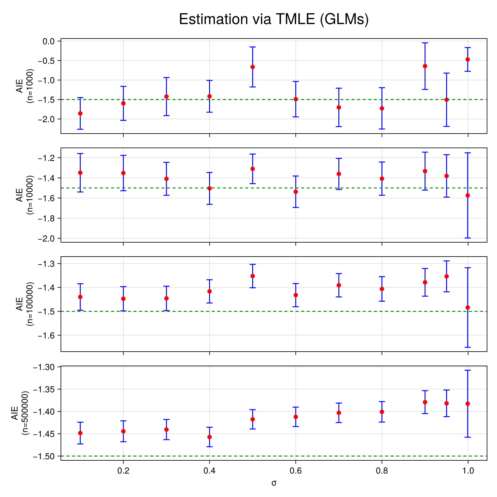
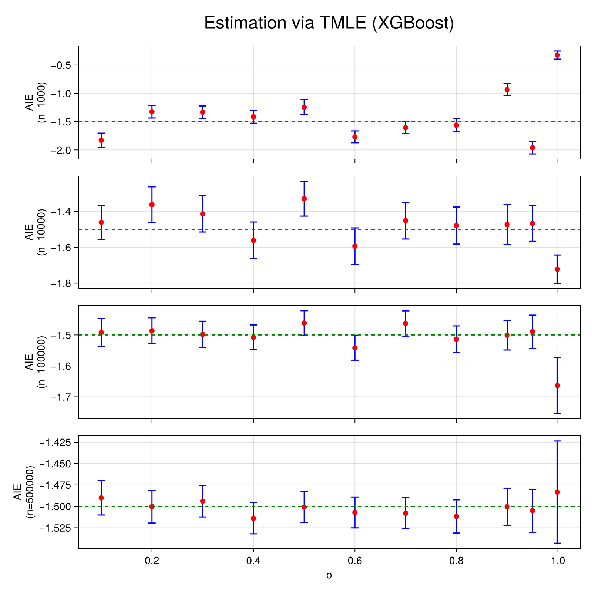
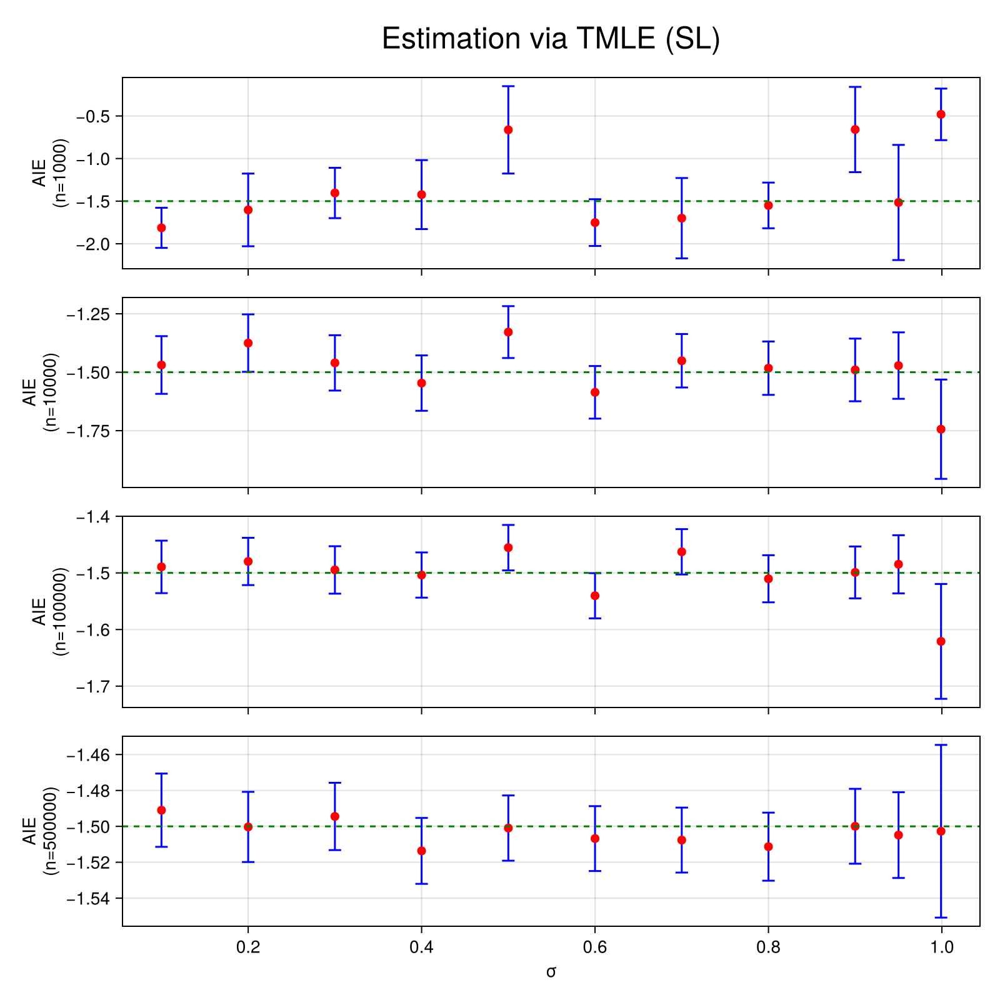

Interaction Estimation
In this example we aim to estimate the average interaction effect of two, potentially correlated, treatment variables T1 and T2 on an outcome Y.
Data Generating Process
Let's consider the following structural causal model where the shaded nodes represent the observed variables.

In other words, only one confounding variable is observed (W1). This would be a major problem if we wanted to estimate the average treatment effect of T1 or T2 on Y separately. However, here, we are interested in interactions and thus W1 is a sufficient adjustment set. This artificial situation is ubiquitous in genetics, where two main sources of confounding exist. Ancestry, can be estimated (here W1) and linkage disequilibrium is usually more challenging to address (here W2).
Let us first define some helper functions and import some libraries.
using Distributions
using Random
using DataFrames
using Statistics
using CategoricalArrays
using TMLE
using CairoMakie
using MLJXGBoostInterface
using MLJBase
using MLJLinearModels
using MLJTuning
using StatisticalMeasures
function estimate_across_correlation_levels(estimators, σs; n=1000)
results = Dict(key => [] for key in keys(estimators))
for σ in σs
dataset = generate_dataset(n=n, σ=σ)
for (estimator_key, estimator) in estimators
result, _ = estimator(Ψ, dataset; verbosity=0)
push!(results[estimator_key], result)
end
end
return results
end
function estimate_across_sample_sizes_and_correlation_levels(estimators, ns, σs)
results = []
for n in ns
results_at_n = estimate_across_correlation_levels(estimators, σs; n=n)
push!(results, results_at_n)
end
return results
end
function plot_across_sample_sizes_and_correlation_levels(results, ns, σs; estimator="TMLE_SL", title="Estimation via TMLE (GLMs)")
fig = Figure(size=(800, 800))
for (index, n) in enumerate(ns)
results_at_n = results[index][estimator]
Ψ̂s = TMLE.estimate.(results_at_n)
errors = last.(confint.(significance_test.(results_at_n))) .- Ψ̂s
ax = if n == last(ns)
Axis(fig[index, 1], xlabel="σ", ylabel="AIE\n(n=$n)")
else
Axis(fig[index, 1], ylabel="AIE\n(n=$n)", xticklabelsvisible=false)
end
errorbars!(ax, σs, Ψ̂s, errors, color = :blue, whiskerwidth = 10)
scatter!(ax, σs, Ψ̂s, color=:red, markersize=10)
hlines!(ax, [-1.5], color=:green, linestyle=:dash)
end
Label(fig[0, :], title; tellwidth=false, fontsize=24)
return fig
end
Random.seed!(123)
μT(w) = [sum(w), sum(w)]
μY(t, w) = 1 + 10t[1] - 3t[2] * t[1] * wμY (generic function with 1 method)We assume that W1 and W2, the confounding variables, follow a uniform distribution.
generate_W(n) = rand(Uniform(0, 1), 2, n)generate_W (generic function with 1 method)T1 and T2 are generated via a copula method through a multivariate normal to induce some statistical dependence (via σ).
function generate_T(W, n; σ=0.5, threshold=0)
covariance = [
1. σ
σ 1.
]
T = zeros(Bool, 2, n)
for i in 1:n
dTi = MultivariateNormal(μT(W[:, i]), covariance)
T[:, i] = rand(dTi) .> threshold
end
return T
endgenerate_T (generic function with 1 method)Finally, Y is generated through a simple linear model with an interaction term.
function generate_Y(T, W1, n; σY=1)
Y = zeros(Float64, n)
for i in 1:n
dY = Normal(μY(T[:, i], W1[i]), σY)
Y[i] = rand(dY)
end
return Y
endgenerate_Y (generic function with 1 method)Importantly, the average interaction effect between T1 and T2 is thus $-3 \mathbb{E}[W] = -1.5$.
We will generate a full dataset with the following function.
function generate_dataset(;n=1000, σ=0.5, threshold=0., σY=1)
W = generate_W(n)
T = generate_T(W, n; σ=σ, threshold=threshold)
W = permutedims(W)
W1 = W[:, 1]
W2 = W[:, 2]
Y = generate_Y(T, W1, n; σY=σY)
T = permutedims(T)
T1 = categorical(T[:, 1])
T2 = categorical(T[:, 2])
return DataFrame(W1=W1, W2=W2, T1=T1, T2=T2, Y=Y)
end
dataset = generate_dataset()
first(dataset, 5)| Row | W1 | W2 | T1 | T2 | Y |
|---|---|---|---|---|---|
| Float64 | Float64 | Cat… | Cat… | Float64 | |
| 1 | 0.9063 | 0.443494 | true | true | 7.34663 |
| 2 | 0.745673 | 0.512083 | true | true | 6.30484 |
| 3 | 0.253849 | 0.334152 | true | true | 9.73191 |
| 4 | 0.427328 | 0.867547 | true | false | 9.49304 |
| 5 | 0.0991336 | 0.125287 | true | true | 11.2495 |
Let's verify that each treatment level is sufficiently present in the dataset (≈positivity).
combine(groupby(dataset, [:T1, :T2]), proprow => :JOINT_TREATMENT_FREQ)| Row | T1 | T2 | JOINT_TREATMENT_FREQ |
|---|---|---|---|
| Cat… | Cat… | Float64 | |
| 1 | false | false | 0.073 |
| 2 | false | true | 0.098 |
| 3 | true | false | 0.107 |
| 4 | true | true | 0.722 |
And that T1 and T2 are indeed correlated.
treatment_correlation(dataset) = cor(unwrap.(dataset.T1), unwrap.(dataset.T2))
treatment_correlation(dataset)0.2918769031970086Estimation
We can now proceed to estimation, for instance using TMLE with linear models.
First, let's define the effect of interest. Interactions are defined via the AIE function (note that we only set W1 as a confounder).
Ψ = AIE(
outcome=:Y,
treatment_values= (
T1=(case=1, control=0),
T2=(case=1, control=0)
),
treatment_confounders = [:W1]
)
linear_models = default_models(G=LogisticClassifier(lambda=0), Q_continuous=LinearRegressor())
estimator = Tmle(models=linear_models, weighted=true)
result, _ = estimator(Ψ, dataset; verbosity=0)
significance_test(result)One sample t-test
-----------------
Population details:
parameter of interest: Mean
value under h_0: 0
point estimate: -1.62611
95% confidence interval: (-2.222, -1.03)
Test summary:
outcome with 95% confidence: reject h_0
two-sided p-value: <1e-06
Details:
number of observations: 1000
t-statistic: -5.3571867958326544
degrees of freedom: 999
empirical standard error: 0.3035374341102465
The true effect size is thus covered by our confidence interval.
Varying levels of correlation
We will now vary the correlation level between T1 and T2 to observe how it affects the estimation results across samples sizes. We will also look at three different modelling strategies:
- Generalized linear models (GLMs)
- XGBoost
- Super Learning (SL) via a model selection approach
First, let's see how the parameter σ affects the correlation between T1 and T2.
function plot_correlations(;σs = 0.1:0.1:1, n=1000, threshold=0., σY=1.)
fig = Figure()
ax = Axis(fig[1, 1], xlabel="σ", ylabel="Correlation(T1, T2)")
correlations = map(σs) do σ
dataset = generate_dataset(;n=n, σ=σ, threshold=threshold, σY=σY)
return treatment_correlation(dataset)
end
scatter!(ax, σs, correlations, color=:blue)
return fig
end
σs = [0.1, 0.2, 0.3, 0.4, 0.5, 0.6, 0.7, 0.8, 0.9, 0.95, 0.999]
plot_correlations(;σs=σs, n=10_000)
As expected, the correlation between T1 and T2 increases with σ. Let's see how this affects estimation.
We first define our Super Learners, they compare L2 penalized GLM and XGboost models for various penalization parameters λ on a holdout set and select the best model.
lambdas = 10 .^ range(1, stop=-4, length=5)
linear_regressors = [RidgeRegressor(lambda=λ) for λ in lambdas]
logistic_classifiers = [LogisticClassifier(lambda=λ) for λ in lambdas]
xgboost_classifiers = [XGBoostClassifier(tree_method="hist", lambda=λ, nthread=1) for λ in lambdas]
xgboost_regressors = [XGBoostRegressor(tree_method="hist", lambda=λ, nthread=1) for λ in lambdas]
sl_regressor = TunedModel(
models=vcat(linear_regressors, xgboost_regressors),
resampling=Holdout(),
measure=rmse,
check_measure=false
)
sl_classifier = TunedModel(
models=vcat(logistic_classifiers, xgboost_classifiers),
resampling=Holdout(),
measure=log_loss,
check_measure=false
)ProbabilisticTunedModel(
model = LogisticClassifier(
lambda = 10.0,
gamma = 0.0,
penalty = :l2,
fit_intercept = true,
penalize_intercept = false,
scale_penalty_with_samples = true,
solver = nothing),
tuning = Explicit(),
resampling = Holdout(
fraction_train = 0.7,
shuffle = false,
rng = Random.TaskLocalRNG()),
measure = LogLoss(tol = 2.22045e-16),
weights = nothing,
class_weights = nothing,
operation = nothing,
range = MLJModelInterface.Probabilistic[LogisticClassifier(lambda = 10.0, …), LogisticClassifier(lambda = 0.5623413251903491, …), LogisticClassifier(lambda = 0.03162277660168379, …), LogisticClassifier(lambda = 0.0017782794100389228, …), LogisticClassifier(lambda = 0.0001, …), XGBoostClassifier(test = 1, …), XGBoostClassifier(test = 1, …), XGBoostClassifier(test = 1, …), XGBoostClassifier(test = 1, …), XGBoostClassifier(test = 1, …)],
selection_heuristic = MLJTuning.NaiveSelection(nothing),
train_best = true,
repeats = 1,
n = nothing,
acceleration = CPU1{Nothing}(nothing),
acceleration_resampling = CPU1{Nothing}(nothing),
check_measure = false,
cache = true,
compact_history = true,
logger = nothing)Now define the sample sizes and correlation levels we want to explore.
ns = [1000, 10_000, 100_000, 500_000]
σs = [0.1, 0.2, 0.3, 0.4, 0.5, 0.6, 0.7, 0.8, 0.9, 0.95, 0.999]11-element Vector{Float64}:
0.1
0.2
0.3
0.4
0.5
0.6
0.7
0.8
0.9
0.95
0.999and estimate (this will take a little while).
estimators = Dict(
"TMLE_GLM" => Tmle(models=linear_models, weighted=true),
"TMLE_XGBOOST" => Tmle(
models=default_models(G=XGBoostClassifier(tree_method="hist", nthread=1), Q_continuous=XGBoostRegressor(tree_method="hist", nthread=1)),
weighted=true,
),
"TMLE_SL" => Tmle(
models=default_models(G=sl_classifier, Q_continuous=sl_regressor),
weighted=true,
)
)
results = estimate_across_sample_sizes_and_correlation_levels(estimators, ns, σs)4-element Vector{Any}:
Dict{String, Vector{Any}}("TMLE_XGBOOST" => [TMLE.TMLEstimate{Float64}(TMLE.StatisticalAIE(:Y, OrderedCollections.OrderedDict(:T1 => (control = 0, case = 1), :T2 => (control = 0, case = 1)), OrderedCollections.OrderedDict(:T1 => (:W1,), :T2 => (:W1,)), ()), -1.8297335991383927, 2.024061538479757, 1000, [-0.46362739332702485, -2.126301431437065, 2.4926191906973885, 3.2480115291846774, 1.6124723185149268, -0.8326642255406598, -1.0130917466629699, -1.7276076254081312, 0.8681396800632843, 3.4755391861396596 … -2.12641236823106, 2.436302305250864, 2.3092175171521987, -0.05138636159148735, -2.217298665383756, -0.38316735010667835, 0.014479893682032285, 3.3473255310897976, -0.8892061814577109, -0.18820026322130176]), TMLE.TMLEstimate{Float64}(TMLE.StatisticalAIE(:Y, OrderedCollections.OrderedDict(:T1 => (control = 0, case = 1), :T2 => (control = 0, case = 1)), OrderedCollections.OrderedDict(:T1 => (:W1,), :T2 => (:W1,)), ()), -1.3246470488568594, 1.7894636982224026, 1000, [-4.160824040381314, -0.02221247104025148, 1.0197401630558385, 0.3905760206611871, -1.9235673403374904, -0.39139710117271564, 0.27123462943526644, -2.0952704433708007, 1.2575451652264382, 0.7888162240532205 … 0.23046283749030555, 0.5538873138552035, 2.3463662559651954, -3.338009847400678, -0.4916057539560583, 2.1463513328494495, 1.9758600874374759, 0.7813244042205929, -1.0014544140945083, -1.310999700202816]), TMLE.TMLEstimate{Float64}(TMLE.StatisticalAIE(:Y, OrderedCollections.OrderedDict(:T1 => (control = 0, case = 1), :T2 => (control = 0, case = 1)), OrderedCollections.OrderedDict(:T1 => (:W1,), :T2 => (:W1,)), ()), -1.333518955235344, 1.7818086267746838, 1000, [3.925298293168779, -1.2368709980806682, -0.8331131191965909, 2.5519421092226784, -0.3196491546597455, 0.14548273834204595, -0.6524004422229591, -0.8112076386369796, 0.6930470669977049, 1.9386092932856385 … -2.922827183855469, -0.9836061665505271, -2.2294661819232697, -2.1622420426018043, -0.45204501391054097, 0.39526654849372667, -0.5843249802478725, -0.43012813666790284, -2.953582224090421, -1.4331409081986273]), TMLE.TMLEstimate{Float64}(TMLE.StatisticalAIE(:Y, OrderedCollections.OrderedDict(:T1 => (control = 0, case = 1), :T2 => (control = 0, case = 1)), OrderedCollections.OrderedDict(:T1 => (:W1,), :T2 => (:W1,)), ()), -1.415609453750931, 1.8278018313803572, 1000, [2.049163267665239, -3.1458370387942614, 2.2557455019855115, -0.1443749332915668, -1.1566200861137408, -2.1489829294853084, -2.2527449552101824, -0.9763574213392711, -0.7934188149857064, 2.4715166024050026 … -2.204144539531794, 0.37282242083652983, -1.7739575923772288, 1.0927100425363732, 2.313552871337386, -1.690203028651187, 0.4726171805334401, -1.758162547086851, -0.6300534672145675, 1.7341750439505503]), TMLE.TMLEstimate{Float64}(TMLE.StatisticalAIE(:Y, OrderedCollections.OrderedDict(:T1 => (control = 0, case = 1), :T2 => (control = 0, case = 1)), OrderedCollections.OrderedDict(:T1 => (:W1,), :T2 => (:W1,)), ()), -1.2456441413359056, 2.149307816087388, 1000, [-1.6041248255363851, -3.7816941024229047, 2.220831083057843, -0.49863467484270374, -2.1697233124805564, 3.1422253139244365, 1.3405197278378918, 1.3832143726434123, -1.0882347266611352, 3.2046767079840732 … 1.9703576104716594, 0.21662477538126074, 2.43525545705079, -2.0403364121794807, 1.2026909091679192, -1.3609275017894018, -8.258299207235432, -2.4327196108089044, 0.531033896068926, -1.483763416314233]), TMLE.TMLEstimate{Float64}(TMLE.StatisticalAIE(:Y, OrderedCollections.OrderedDict(:T1 => (control = 0, case = 1), :T2 => (control = 0, case = 1)), OrderedCollections.OrderedDict(:T1 => (:W1,), :T2 => (:W1,)), ()), -1.7691009724635134, 1.6855278401474867, 1000, [1.0704526403733898, -0.5645841498026385, -1.0388931174709986, -0.3796309569318362, -1.7137181613736123, -0.48670697159830023, 0.7869330546773382, -0.9598925080081941, 2.0582055143192415, -1.6395959717436206 … 2.530235803881525, -0.23429769428440284, -0.49453289802693884, -1.0751481437325618, 1.3400412296209707, -0.26454486223887397, 0.9235395762288056, 1.9611464143843733, -0.8440251817843367, 1.9930971856093276]), TMLE.TMLEstimate{Float64}(TMLE.StatisticalAIE(:Y, OrderedCollections.OrderedDict(:T1 => (control = 0, case = 1), :T2 => (control = 0, case = 1)), OrderedCollections.OrderedDict(:T1 => (:W1,), :T2 => (:W1,)), ()), -1.6073763491013913, 1.7279485250293205, 1000, [0.22817628851754632, 0.29093175599855914, 1.3203183601566881, -0.410295555529037, -1.2649320505137163, 0.9896610340761707, 0.012880286691716147, -1.634495105487634, -2.2083896030897856, -1.191923125515033 … -1.3808952113857111, 2.86581526873867, -1.6254751448178772, -1.2595947495693198, -1.9031560732097828, 1.5313822150744119, -1.0537742583473404, -2.1450377656163147, 0.022520923838426965, 2.894728784453361]), TMLE.TMLEstimate{Float64}(TMLE.StatisticalAIE(:Y, OrderedCollections.OrderedDict(:T1 => (control = 0, case = 1), :T2 => (control = 0, case = 1)), OrderedCollections.OrderedDict(:T1 => (:W1,), :T2 => (:W1,)), ()), -1.561922529683646, 1.9342503325870055, 1000, [1.3111102421839773, -2.0699038462414787, 2.0363581918624565, 0.738390630275459, 0.6709658988979806, -1.7640710211312458, -1.4059252556356723, -0.8321920056523078, 2.2824678400164182, 0.6519596274880162 … -1.3532994079681984, 0.2678918603802915, -2.949730789757245, 1.3679420168565555, -1.7411199215106083, 0.6989763395025189, -0.9115792180546298, -1.495618409024995, -1.2452791916788881, -1.7896785895685086]), TMLE.TMLEstimate{Float64}(TMLE.StatisticalAIE(:Y, OrderedCollections.OrderedDict(:T1 => (control = 0, case = 1), :T2 => (control = 0, case = 1)), OrderedCollections.OrderedDict(:T1 => (:W1,), :T2 => (:W1,)), ()), -0.9346083303617795, 1.6850581506025484, 1000, [-1.9399394657628566, -1.059274048640201, -1.866048564566992, 2.268565688599618, 3.7149719192476027, -0.9003349695770111, -0.05392298168435189, -3.678683893263462, -2.0011155711924893, -2.3456471943287274 … -0.03451560691982669, -0.15512332372057236, -1.6086214338985099, -0.18372544981870892, 2.240417966733791, 1.7276251071958695, 4.01018256190936, 5.53459689348111, -2.0837340136432845, -3.6506213308419575]), TMLE.TMLEstimate{Float64}(TMLE.StatisticalAIE(:Y, OrderedCollections.OrderedDict(:T1 => (control = 0, case = 1), :T2 => (control = 0, case = 1)), OrderedCollections.OrderedDict(:T1 => (:W1,), :T2 => (:W1,)), ()), -1.9631883620295112, 1.7370163136613765, 1000, [-0.6029649237108969, 0.693139422473, -0.7902867334375739, -0.4723580222120507, -1.2166406411922328, -0.43273261919199246, 0.6606638802879924, 1.1593675163693773, -0.424278330256831, 0.7764957049331812 … -4.352682071874696, -1.6533861852251373, 2.34991441987431, -2.2056363629282307, -2.8199746811160553, -1.9795739956230802, 2.5868283021454537, 3.65640395593027, -0.11103446572116993, 3.8597468258960026]), TMLE.TMLEstimate{Float64}(TMLE.StatisticalAIE(:Y, OrderedCollections.OrderedDict(:T1 => (control = 0, case = 1), :T2 => (control = 0, case = 1)), OrderedCollections.OrderedDict(:T1 => (:W1,), :T2 => (:W1,)), ()), -0.3237937881929318, 1.1572739639368543, 1000, [-0.7791672718422299, 1.113685190298057, -0.0036590033748618855, -1.4461119877319235, -0.7937961796806703, -0.32566345818465864, 1.32705304751548, -0.3659805116345374, -0.4308662845540523, -0.2576556330039278 … -1.3498858163464713, -1.0481348591535633, -0.2772841812014829, -0.2575451266202068, -1.2483511809799581, 1.0577167214065404, 1.485015263158897, 1.2382021157214287, -0.7097510905639295, -0.8147657966204485])], "TMLE_SL" => [TMLE.TMLEstimate{Float64}(TMLE.StatisticalAIE(:Y, OrderedCollections.OrderedDict(:T1 => (control = 0, case = 1), :T2 => (control = 0, case = 1)), OrderedCollections.OrderedDict(:T1 => (:W1,), :T2 => (:W1,)), ()), -1.8133545716726058, 3.7939065450092753, 1000, [0.08069890811603175, -2.4433501937558817, 2.58904911406203, 5.623447336044171, 2.0413635194396673, -0.7937935078357399, -0.37900255456414333, -1.7843770137354482, 0.8806107639688232, 3.0048175463083675 … -2.049140291585423, 2.354497719168691, 1.5037985153124942, 13.213909566152727, -1.9409615915170333, 0.24925021077897713, 0.8692458783143571, 5.94695271885075, -0.37073653829244524, -0.6412065813554924]), TMLE.TMLEstimate{Float64}(TMLE.StatisticalAIE(:Y, OrderedCollections.OrderedDict(:T1 => (control = 0, case = 1), :T2 => (control = 0, case = 1)), OrderedCollections.OrderedDict(:T1 => (:W1,), :T2 => (:W1,)), ()), -1.6029977431553097, 6.874833420825946, 1000, [-4.035866254772382, 6.063602846525821, -0.03624969268607755, 2.979793153500638, 0.2945450270986402, -0.8629800082135436, -1.8082920768582842, -2.976625753745928, 1.6794566177568153, 1.660931301977476 … 0.9536128455368632, -0.347258696358063, 3.00649322851692, -2.2599279807927584, -0.7019536753568205, -3.015595003976655, 1.5499681252350628, 4.561010737545039, 0.9544785562687601, -0.7145693698730263]), TMLE.TMLEstimate{Float64}(TMLE.StatisticalAIE(:Y, OrderedCollections.OrderedDict(:T1 => (control = 0, case = 1), :T2 => (control = 0, case = 1)), OrderedCollections.OrderedDict(:T1 => (:W1,), :T2 => (:W1,)), ()), -1.4042890396456202, 4.758707262488664, 1000, [3.386730908864556, -1.1340704604478127, -0.7628937370295892, 3.955943621456564, -3.157791718308241, 0.277283145969624, -1.5335868860480009, -0.08176715331410644, 3.3300959620182002, 5.861138327496734 … -13.089008998885898, -1.7752211738374997, -5.21179600278236, -7.427286171045905, -0.7347690645965407, 0.49456783909849933, -1.5813014354980786, -0.6682928531583743, -2.314212764100824, -7.559397311361835]), TMLE.TMLEstimate{Float64}(TMLE.StatisticalAIE(:Y, OrderedCollections.OrderedDict(:T1 => (control = 0, case = 1), :T2 => (control = 0, case = 1)), OrderedCollections.OrderedDict(:T1 => (:W1,), :T2 => (:W1,)), ()), -1.4234691918613265, 6.523513123179018, 1000, [14.59045264078424, -2.3929853851727145, 1.6330191189858958, 0.6675697781433284, 0.36574165384142876, -1.2636728137142863, 0.038693469821707294, -0.15292235277711036, -0.07897136022268356, 20.947568128778432 … -1.11956960033587, 0.6213405383946792, 0.07287135365820843, 1.5427119986623112, 12.638144214130755, -0.5426808107078543, 0.2796522937700204, -0.21961174717628482, -1.4182773429856521, 3.3337358359778912]), TMLE.TMLEstimate{Float64}(TMLE.StatisticalAIE(:Y, OrderedCollections.OrderedDict(:T1 => (control = 0, case = 1), :T2 => (control = 0, case = 1)), OrderedCollections.OrderedDict(:T1 => (:W1,), :T2 => (:W1,)), ()), -0.6631674066466504, 8.25946381265041, 1000, [-0.5469835511823091, -1.594521944785054, -7.992064556549908, -0.7980170684331485, -2.2323580444627193, 4.937638109478327, 3.656214097173595, 1.7373198309342774, 0.14869959677673367, 2.367757053658041 … 7.800495425476, 10.760414711072222, 1.6736945339778495, -0.601617986010193, 1.5153841006595243, -12.062385676148407, -35.467127660042316, -27.28263197160334, 2.3495960450650912, -16.996204751778745]), TMLE.TMLEstimate{Float64}(TMLE.StatisticalAIE(:Y, OrderedCollections.OrderedDict(:T1 => (control = 0, case = 1), :T2 => (control = 0, case = 1)), OrderedCollections.OrderedDict(:T1 => (:W1,), :T2 => (:W1,)), ()), -1.7521787519899499, 4.422399481376632, 1000, [1.0053133226673185, -3.1462589601365485, -0.8241307481036897, -0.18924843732536617, -1.4699528366882415, -0.313427481175853, -1.1613615213890534, -5.808310505797441, 2.1052531742754743, -0.8032675033179442 … 5.6727770605525345, -0.9172885098109724, -0.1535735745627631, -0.9503301485486113, 0.7631776784809652, -6.141780055291854, 0.9373781215037919, 4.09891464597651, -3.7234571687872133, 2.576735045420235]), TMLE.TMLEstimate{Float64}(TMLE.StatisticalAIE(:Y, OrderedCollections.OrderedDict(:T1 => (control = 0, case = 1), :T2 => (control = 0, case = 1)), OrderedCollections.OrderedDict(:T1 => (:W1,), :T2 => (:W1,)), ()), -1.7000847277642774, 7.596805697907706, 1000, [-0.2799457242692235, 1.0692737762662377, 0.5571903622890636, -0.602475636869985, -16.265239702684944, 2.5543706275522444, 0.6957851954432729, -1.6564458047554689, -1.8526714499172006, -1.6251850909282612 … -1.3328121011239316, 21.060356838389765, -2.2430553155624473, -1.2738865150502856, 2.9645217176338168, 2.397930475831285, -5.656127094274378, -2.694048557004586, 1.148080249648374, 9.768462145987641]), TMLE.TMLEstimate{Float64}(TMLE.StatisticalAIE(:Y, OrderedCollections.OrderedDict(:T1 => (control = 0, case = 1), :T2 => (control = 0, case = 1)), OrderedCollections.OrderedDict(:T1 => (:W1,), :T2 => (:W1,)), ()), -1.550478721071371, 4.322715715273051, 1000, [6.2514869054607285, -1.8598899034079754, 14.019025707073913, 0.96873240899616, 0.4422914640148825, -6.794605969088275, -2.662221583494244, -0.9093935592226853, 2.5622518084121837, 0.7988420267132365 … -1.7663933942018313, -0.4402152852029577, -2.2681641547485283, 1.2890192183958038, -2.446863399632241, 0.5875463252521678, -1.422469124395075, -1.536671932690841, -0.7487742954293916, -2.473571189857449]), TMLE.TMLEstimate{Float64}(TMLE.StatisticalAIE(:Y, OrderedCollections.OrderedDict(:T1 => (control = 0, case = 1), :T2 => (control = 0, case = 1)), OrderedCollections.OrderedDict(:T1 => (:W1,), :T2 => (:W1,)), ()), -0.6591425367236005, 8.06297455518204, 1000, [-1.5835201857463677, -8.396333484877378, -1.1171602199142212, 1.9435802045459067, 9.152888936054945, -0.09327081143329924, 1.1590968793820529, -6.752513798035416, -1.0199434704773709, -1.8455681143514329 … 0.18799123595301576, 0.5161057749839012, -0.5202108816022388, 0.57626356621872, 15.035547777767633, 1.350514693697321, 25.901953886338674, 20.58700093172333, -0.9965863908798367, -4.743887989640677]), TMLE.TMLEstimate{Float64}(TMLE.StatisticalAIE(:Y, OrderedCollections.OrderedDict(:T1 => (control = 0, case = 1), :T2 => (control = 0, case = 1)), OrderedCollections.OrderedDict(:T1 => (:W1,), :T2 => (:W1,)), ()), -1.5157655565001968, 10.89140227870365, 1000, [-1.7899240004626773, 0.5045642940910057, 0.6343697915548862, 0.7537465159449448, -0.3518010424221998, -0.6530533016965001, 51.89544163709959, -0.016771658613204506, -0.2845901684762017, 1.0499094771793176 … -3.893792842120795, -0.9228716898412306, -6.912100418645113, -1.8619624265913541, -2.0850274854415103, 0.1853828353479666, 2.0995183046147217, 1.7625938188503498, 1.357036876599072, 5.1107644413324635]), TMLE.TMLEstimate{Float64}(TMLE.StatisticalAIE(:Y, OrderedCollections.OrderedDict(:T1 => (control = 0, case = 1), :T2 => (control = 0, case = 1)), OrderedCollections.OrderedDict(:T1 => (:W1,), :T2 => (:W1,)), ()), -0.4813220419022548, 4.875658305072719, 1000, [-0.9238585733189759, 2.837171280579211, -1.5139294683149436, -0.012085923629411662, -1.824473582171007, -0.13109968693468063, 0.903520660716975, 0.4867959357814402, -0.2357055185284156, -0.32546652692132483 … -1.0384976865091637, -1.3182989460083776, 0.4987158097900932, -4.308301396818544, -2.0846714191988927, 1.6115833385165286, 2.164661160694659, 2.6007856892158223, -0.7721512319333921, -2.746944998402686])], "TMLE_GLM" => [TMLE.TMLEstimate{Float64}(TMLE.StatisticalAIE(:Y, OrderedCollections.OrderedDict(:T1 => (control = 0, case = 1), :T2 => (control = 0, case = 1)), OrderedCollections.OrderedDict(:T1 => (:W1,), :T2 => (:W1,)), ()), -1.8562664439279932, 6.549359109382616, 1000, [-0.3589123478019159, -2.0974306218503704, 2.100871752988838, 5.33370945887415, 3.1686425401816436, 0.6556439265729777, 0.5697492017133918, -2.0660481366271317, 1.877982960165875, 2.2498153806571 … -1.9683440245191268, 2.1914579847067084, -0.5582797034704878, 78.21613342692696, -1.0719151502240902, 0.5482024000661119, 1.6586079413541164, 6.957419043806507, 0.6137682033075811, -0.01266060172842716]), TMLE.TMLEstimate{Float64}(TMLE.StatisticalAIE(:Y, OrderedCollections.OrderedDict(:T1 => (control = 0, case = 1), :T2 => (control = 0, case = 1)), OrderedCollections.OrderedDict(:T1 => (:W1,), :T2 => (:W1,)), ()), -1.5983778841618768, 7.020835011893497, 1000, [-3.9882528579239533, 6.054855877977765, -0.03830072836971143, 3.0235275967081847, 0.29033375920073085, -0.6007447721423641, -1.7915402796666327, -2.956882925041557, 1.6665929786069755, 1.555903524534242 … 0.9448666572493062, -0.3458026182066601, 2.9723051290600386, -2.2977561448060326, -0.6948845960075831, -3.0206768660055263, 1.5431543102083323, 4.47086571725117, 0.9633178308150756, -0.7070987551608192]), TMLE.TMLEstimate{Float64}(TMLE.StatisticalAIE(:Y, OrderedCollections.OrderedDict(:T1 => (control = 0, case = 1), :T2 => (control = 0, case = 1)), OrderedCollections.OrderedDict(:T1 => (:W1,), :T2 => (:W1,)), ()), -1.4240599958442164, 7.8746884943332125, 1000, [3.596936242793994, -1.0660728321022068, -0.20195574489892787, 8.77432804454747, 1.4283036748324525, 1.860784688142877, 1.4944291286027738, -0.33200653727435314, 9.667539703155917, 10.020072696070917 … -28.10718012192371, -1.9381227081516994, -7.609085996577917, -13.574286031884716, -0.8266422977678525, 1.5576325425489312, -1.3647547845299048, -1.1868917770840826, -2.562186001139483, -29.255530970611115]), TMLE.TMLEstimate{Float64}(TMLE.StatisticalAIE(:Y, OrderedCollections.OrderedDict(:T1 => (control = 0, case = 1), :T2 => (control = 0, case = 1)), OrderedCollections.OrderedDict(:T1 => (:W1,), :T2 => (:W1,)), ()), -1.4170376866367227, 6.581091675532485, 1000, [14.87250754648246, -2.359633687518244, 1.6424863792911792, 0.7043503109963356, 0.40037832607215096, -1.2559370934785838, 0.0637801009368769, -0.12534691162022563, -0.04624556146790154, 20.819059749268355 … -1.1114617732606926, 0.6304150773767885, 0.09912212790274559, 1.5135979550528147, 12.722858981896028, -0.5175205629472253, 0.26835640084990986, -0.2325383930596697, -1.4569454907876038, 3.137964680045741]), TMLE.TMLEstimate{Float64}(TMLE.StatisticalAIE(:Y, OrderedCollections.OrderedDict(:T1 => (control = 0, case = 1), :T2 => (control = 0, case = 1)), OrderedCollections.OrderedDict(:T1 => (:W1,), :T2 => (:W1,)), ()), -0.6641442047126151, 8.277337278304852, 1000, [-0.546923074394954, -1.5916304549410525, -7.9656707765143056, -0.7982381365990137, -2.2296751437442346, 4.94464282831811, 3.6724478522288453, 1.7366015589941752, 0.1491246995943315, 2.3672350730821083 … 7.814507758186412, 10.791019162054406, 1.6937542883358792, -0.5989861073355816, 1.5143819277344883, -12.076358633609845, -35.54718486171614, -27.261185570805964, 2.368127052450599, -16.927286796608488]), TMLE.TMLEstimate{Float64}(TMLE.StatisticalAIE(:Y, OrderedCollections.OrderedDict(:T1 => (control = 0, case = 1), :T2 => (control = 0, case = 1)), OrderedCollections.OrderedDict(:T1 => (:W1,), :T2 => (:W1,)), ()), -1.4906487329781226, 7.319775229410356, 1000, [1.3913386223320967, -9.720669803454653, 0.082441729424354, 0.25299541634225575, -1.0571400123057506, -0.325387926493643, 18.280232352689765, -5.1146327007762, -3.315086194526441, -0.32362021032946264 … 1.1500423181239994, -2.112192677186851, -0.562328690479457, -0.9518714102847906, -0.002324417615823085, -9.180670553930046, 1.2896313780001527, 1.3563395136390324, -11.360155429860258, 2.14223270322951]), TMLE.TMLEstimate{Float64}(TMLE.StatisticalAIE(:Y, OrderedCollections.OrderedDict(:T1 => (control = 0, case = 1), :T2 => (control = 0, case = 1)), OrderedCollections.OrderedDict(:T1 => (:W1,), :T2 => (:W1,)), ()), -1.702160290081622, 7.943263268744626, 1000, [-0.3321175455218101, 1.0560656938380137, 0.5681618673532668, -0.5987639556433361, -16.52342221858889, 2.5366342031389078, 0.7179434501931433, -1.654860274794943, -1.8390067326271677, -1.5761835849149548 … -1.3283174539404845, 21.864057795726836, -2.203236835348992, -1.3094511812359895, 2.6419761793931147, 2.380918812181225, -5.862473274605539, -2.6757419775503433, 1.1366259896993705, 9.210461751227474]), TMLE.TMLEstimate{Float64}(TMLE.StatisticalAIE(:Y, OrderedCollections.OrderedDict(:T1 => (control = 0, case = 1), :T2 => (control = 0, case = 1)), OrderedCollections.OrderedDict(:T1 => (:W1,), :T2 => (:W1,)), ()), -1.7261760093716412, 8.545291639495293, 1000, [19.33706659713186, -0.5121946514773053, 19.548606296118525, 0.7881946264192872, -0.4479492270436398, -10.869234347416308, -13.530269914802757, -0.0977214251398148, 2.675583806721664, 0.5708173587279892 … -2.0092934240647278, -1.8008444589924384, -0.8135248452734031, 1.0049564095424908, -2.3198019270325583, 0.7729701715569149, -2.144087768550224, -0.5872342348934686, -0.29301889009185106, -2.247880587504824]), TMLE.TMLEstimate{Float64}(TMLE.StatisticalAIE(:Y, OrderedCollections.OrderedDict(:T1 => (control = 0, case = 1), :T2 => (control = 0, case = 1)), OrderedCollections.OrderedDict(:T1 => (:W1,), :T2 => (:W1,)), ()), -0.642952508317059, 9.632763747258696, 1000, [-1.508877383773934, -9.112312444429117, -1.058285985240174, 2.0640026150814728, 5.711375184208732, -0.10337062605929914, 1.1454879524371537, -6.932632828823647, -0.9740490166741637, -1.8711128354384656 … 0.17314169226695997, 0.47485609155489583, -0.49948235064886976, 0.5698390960822585, 16.560964260734888, 1.4162864880897232, 28.341060205070914, 22.508539480519, -0.9468439437462779, -4.7478594149857765]), TMLE.TMLEstimate{Float64}(TMLE.StatisticalAIE(:Y, OrderedCollections.OrderedDict(:T1 => (control = 0, case = 1), :T2 => (control = 0, case = 1)), OrderedCollections.OrderedDict(:T1 => (:W1,), :T2 => (:W1,)), ()), -1.5055105785997271, 11.030830879880963, 1000, [-1.7951956757089005, 0.5041387958167574, 0.6329129375658301, 0.752580896138985, -0.35164290334672993, -0.6520171302071728, 52.96667416359869, -0.017579778271930347, -0.28472497751517745, 1.0486751786073907 … -3.885833476095921, -0.9225327389717947, -6.8888714297489395, -1.8610518606702513, -2.081059856284914, 0.18582290784350322, 2.0973910446394086, 1.7618666246414327, 1.3561197342393188, 5.119808503894882]), TMLE.TMLEstimate{Float64}(TMLE.StatisticalAIE(:Y, OrderedCollections.OrderedDict(:T1 => (control = 0, case = 1), :T2 => (control = 0, case = 1)), OrderedCollections.OrderedDict(:T1 => (:W1,), :T2 => (:W1,)), ()), -0.471190834356691, 4.913163579475139, 1000, [-0.9191593662303321, 2.7970782580429705, -1.5220219332726868, -0.02402394217819772, -1.7881544110201002, -0.15232700887243764, 0.9341427986136888, 0.4608734231674479, -0.23616188194830626, -0.33417351019799685 … -1.062224210168496, -1.3252998526026352, 0.4981944297585082, -4.371412257912195, -2.127711466281617, 1.603255359212441, 2.0974279845126858, 2.5694687327479477, -0.7917868355113475, -2.815919342264292])])
Dict{String, Vector{Any}}("TMLE_XGBOOST" => [TMLE.TMLEstimate{Float64}(TMLE.StatisticalAIE(:Y, OrderedCollections.OrderedDict(:T1 => (control = 0, case = 1), :T2 => (control = 0, case = 1)), OrderedCollections.OrderedDict(:T1 => (:W1,), :T2 => (:W1,)), ()), -1.4606985886728452, 4.8469063034957856, 10000, [-0.9815599681989354, -3.190531166448473, 1.5394628330450255, 1.4052996869519736, -3.292655066207409, 0.5547993813186365, -1.036807202898553, 0.6983755657075479, 1.8111599955499111, 0.8165022996589095 … 1.6675087429497684, 4.815682304425366, 1.3288014477027343, 1.9283779058556647, -0.39408125917713877, -0.5604857828950579, -0.1489965731383296, -1.0534198412847617, 10.257454172085122, -1.4073267045398268]), TMLE.TMLEstimate{Float64}(TMLE.StatisticalAIE(:Y, OrderedCollections.OrderedDict(:T1 => (control = 0, case = 1), :T2 => (control = 0, case = 1)), OrderedCollections.OrderedDict(:T1 => (:W1,), :T2 => (:W1,)), ()), -1.362726168196093, 5.068349347146647, 10000, [1.02395960552545, -12.480324631133236, -6.450771689037367, -1.2445684274115685, -0.007501828429139816, -0.9422101677178341, 0.2335996417340621, 1.4359232757186606, -2.1879616492203975, 8.30481416785847 … 1.1434816603423374, 1.2392162288994657, -2.331851721291841, 1.384659595911068, 2.769810919752052, 2.7978170957482478, 1.3352548337088894, 0.3695581295146544, 14.582278602615617, 0.040407851282167506]), TMLE.TMLEstimate{Float64}(TMLE.StatisticalAIE(:Y, OrderedCollections.OrderedDict(:T1 => (control = 0, case = 1), :T2 => (control = 0, case = 1)), OrderedCollections.OrderedDict(:T1 => (:W1,), :T2 => (:W1,)), ()), -1.4140054034051657, 5.155047959676427, 10000, [-0.19002822570912226, 0.46311994881337537, 0.4391586405668481, -2.5968534262166396, -2.692633942658359, -1.423365476958014, -3.0401090804859043, 2.188097325544627, 1.796147002737706, 7.789921032157649 … -3.0220282593745496, -1.0324591853296128, -0.05835901104405772, 2.2836656753789697, -1.103055087122011, -6.999093509809887, 0.889656909551418, 0.1854346134016245, 1.69761805314688, 13.622942918086963]), TMLE.TMLEstimate{Float64}(TMLE.StatisticalAIE(:Y, OrderedCollections.OrderedDict(:T1 => (control = 0, case = 1), :T2 => (control = 0, case = 1)), OrderedCollections.OrderedDict(:T1 => (:W1,), :T2 => (:W1,)), ()), -1.5617322614670837, 5.220942766622747, 10000, [-4.5620305594596795, -0.6693117101494699, -14.592057009160824, -0.38248591777131397, -0.7151456965710712, 5.057740502855877, 0.2843029338588983, -1.1590154072993701, 1.2926877239329395, 2.259426505722879 … -4.067655587647606, 3.1056838426432822, 0.4358485531072377, 2.9900531521511624, 0.6940032637268372, -1.6407518679453121, -9.394953767689218, -3.167739559491696, -2.573848310243986, 1.4946507068839552]), TMLE.TMLEstimate{Float64}(TMLE.StatisticalAIE(:Y, OrderedCollections.OrderedDict(:T1 => (control = 0, case = 1), :T2 => (control = 0, case = 1)), OrderedCollections.OrderedDict(:T1 => (:W1,), :T2 => (:W1,)), ()), -1.3293012980235936, 4.955671822601912, 10000, [-0.3530666811536221, -2.2196562345631294, -1.1814042375329794, 0.8664279175084908, -0.1232554483035167, 0.489296010204763, -1.470449994825724, -0.9668748375790904, 2.933959479046452, -6.640419046528086 … 3.229331193353169, 4.043253713940006, -2.5225739495249613, 1.0434696610674772, 0.647489397100831, -0.9685761369582528, -3.8659212167184, -0.21332221492144063, -1.2677657974671976, -1.9271523331891867]), TMLE.TMLEstimate{Float64}(TMLE.StatisticalAIE(:Y, OrderedCollections.OrderedDict(:T1 => (control = 0, case = 1), :T2 => (control = 0, case = 1)), OrderedCollections.OrderedDict(:T1 => (:W1,), :T2 => (:W1,)), ()), -1.5942711780383498, 5.210527294242356, 10000, [-0.10354066532044093, 8.300048633162314, -2.5659802696136476, -0.2893790461312326, -0.14759704661608297, -0.0672484427438973, -1.5503913886911846, 4.451422871891013, 1.7110938975186978, -0.5082972841938764 … -5.549286572039522, 2.031150522730126, 6.281263561723845, -6.6151216737795195, 0.4504691987193553, 2.4480401791289927, -0.001470032124012241, -0.3604449319965194, -3.4756914945518242, 4.475270816751314]), TMLE.TMLEstimate{Float64}(TMLE.StatisticalAIE(:Y, OrderedCollections.OrderedDict(:T1 => (control = 0, case = 1), :T2 => (control = 0, case = 1)), OrderedCollections.OrderedDict(:T1 => (:W1,), :T2 => (:W1,)), ()), -1.4520369302636522, 5.198096180570002, 10000, [-0.9495298702398582, -0.4413816023634649, -2.5757433898356523, 1.4515370033419293, 1.5722273383761718, -0.6743038814667242, 0.32535767150987643, -0.9204452818883914, 2.7173185625280243, 2.094083824115989 … -1.9349624745519254, -0.031945075351428875, -1.5642043687412044, -1.8093891508948983, -0.4070738215117957, -0.787795819041711, 2.3685478346154367, 2.5406711373766226, 33.875212843886715, -0.8906739931994985]), TMLE.TMLEstimate{Float64}(TMLE.StatisticalAIE(:Y, OrderedCollections.OrderedDict(:T1 => (control = 0, case = 1), :T2 => (control = 0, case = 1)), OrderedCollections.OrderedDict(:T1 => (:W1,), :T2 => (:W1,)), ()), -1.4791354176749203, 5.263611160303395, 10000, [-0.6659998289296861, -2.423265711396541, -0.31143628575308335, 12.34220692361888, -0.2092884085758202, 0.5609539303972823, -7.390368732587525, 1.7296583556513851, 1.0215468240087744, -5.07841980922109 … 2.7335228416363515, 0.1323061415837259, -2.5131342391591676, -0.2817069250960271, -4.39340617543999, -1.9240375411336226, -1.1226683447454826, 0.301463032557168, -0.410123993090056, 1.3062986130208718]), TMLE.TMLEstimate{Float64}(TMLE.StatisticalAIE(:Y, OrderedCollections.OrderedDict(:T1 => (control = 0, case = 1), :T2 => (control = 0, case = 1)), OrderedCollections.OrderedDict(:T1 => (:W1,), :T2 => (:W1,)), ()), -1.473711720748497, 5.715411888298688, 10000, [-0.8954981458862981, -0.22452789373272775, 0.6553409541401228, 0.6730227781678233, -3.083766048530084, -4.16533630479595, -1.1651520802672974, 0.37857029405214737, -3.798065043830069, -0.89169825177838 … -3.4798153571737673, 0.5326979728451362, -0.010919378883212705, -1.5258283489343156, 0.021710337097825883, 1.0749224335642666, 0.6500972609854855, -0.2393917717197358, 1.28268023048803, 7.551173192161046]), TMLE.TMLEstimate{Float64}(TMLE.StatisticalAIE(:Y, OrderedCollections.OrderedDict(:T1 => (control = 0, case = 1), :T2 => (control = 0, case = 1)), OrderedCollections.OrderedDict(:T1 => (:W1,), :T2 => (:W1,)), ()), -1.466828673294165, 5.111922170374951, 10000, [-1.735487119365487, 16.57953936390462, 2.0570698403887535, 5.492044240148403, 2.706499195433235, -0.2786060104098203, -0.30885552929626603, -1.705849911683225, -4.25614747380453, 1.5512616094870166 … -2.5735656306995995, -0.060861998869811584, -1.0188211164130423, -2.6178340633681287, -0.844905527368832, -0.7378585599112097, 1.0539884999821916, -4.345855488620396, 0.9896795440997055, 0.43141810763002175]), TMLE.TMLEstimate{Float64}(TMLE.StatisticalAIE(:Y, OrderedCollections.OrderedDict(:T1 => (control = 0, case = 1), :T2 => (control = 0, case = 1)), OrderedCollections.OrderedDict(:T1 => (:W1,), :T2 => (:W1,)), ()), -1.722444869727508, 4.047939878227776, 10000, [-0.6733290697219825, -3.2728814446351726, 0.46396921367414773, -0.2961253528122409, -2.67786468881613, -0.8505633741250371, -0.38858752455402157, -0.18725320313299937, 1.7053103357115227, -1.5628267179811337 … -0.03309668196042487, -1.8709117457565876, 0.31660566219832564, -0.08761593229624065, -2.3208899516322514, -1.8841699484518148, 0.32880733864802364, -3.826043495005446, -2.52831639715864, 1.0081505396594177])], "TMLE_SL" => [TMLE.TMLEstimate{Float64}(TMLE.StatisticalAIE(:Y, OrderedCollections.OrderedDict(:T1 => (control = 0, case = 1), :T2 => (control = 0, case = 1)), OrderedCollections.OrderedDict(:T1 => (:W1,), :T2 => (:W1,)), ()), -1.4690339679527682, 6.301116558841762, 10000, [-0.686455707195962, -2.491810749542914, 2.0434671561045414, 1.4533114812860006, -3.6226096878913667, 0.45804377567268534, -1.374460096297009, -0.20766654639314397, 2.292429346252823, 0.7963262003866916 … 2.876737110696972, 4.850486765766484, 1.142774399348715, 1.9943772673657483, -0.5094651205994408, 0.00859690743798025, -0.362441898970118, -1.863876060149173, 9.740750999649636, -1.2385271034268603]), TMLE.TMLEstimate{Float64}(TMLE.StatisticalAIE(:Y, OrderedCollections.OrderedDict(:T1 => (control = 0, case = 1), :T2 => (control = 0, case = 1)), OrderedCollections.OrderedDict(:T1 => (:W1,), :T2 => (:W1,)), ()), -1.3752862081426422, 6.268222492465917, 10000, [0.604574224094681, -17.18855746810083, -8.015309350156585, -1.1155397626471972, -0.4105423628869583, -1.1050512295229595, 0.14429938293507688, 2.1220421467712827, -2.899874002664159, 8.458366608732009 … 0.8200629538960604, 1.3974242084229391, -2.6609670426260386, 0.2918784942218734, 2.420093988897915, 2.8877364402070294, 0.9461303631883067, 0.0803762850577483, 10.936047467301742, -0.1318004641640924]), TMLE.TMLEstimate{Float64}(TMLE.StatisticalAIE(:Y, OrderedCollections.OrderedDict(:T1 => (control = 0, case = 1), :T2 => (control = 0, case = 1)), OrderedCollections.OrderedDict(:T1 => (:W1,), :T2 => (:W1,)), ()), -1.46002862046242, 6.038335431509823, 10000, [-0.6492143906255218, -0.5249429092510111, 0.5220585934159088, -1.6226089943766606, -2.5742415965793386, -1.6007776740809119, -2.7836549110105984, 3.14647816509792, 2.659183238343622, 8.35487299243202 … -2.9523325459365375, -0.7699413088569012, 0.41305915335909127, 1.757201487369196, -1.5282984138569078, -13.325965707915227, 0.8270504911046482, -0.2288936520847643, 1.4927313794577806, 8.027170063076381]), TMLE.TMLEstimate{Float64}(TMLE.StatisticalAIE(:Y, OrderedCollections.OrderedDict(:T1 => (control = 0, case = 1), :T2 => (control = 0, case = 1)), OrderedCollections.OrderedDict(:T1 => (:W1,), :T2 => (:W1,)), ()), -1.5463487673736704, 6.041223295905578, 10000, [-4.954245148001896, -1.0495278410549824, -17.06177077399284, -0.4103897718494444, -2.5616375732798495, 4.35476752469822, -0.20402863142558175, -1.080515753549015, 1.2094212109063214, 2.3423303849555497 … -3.628654538842843, 3.4870336309378125, 0.3614010367877184, 2.6932981418326434, 0.0380161058664209, -1.4439413106839754, -6.914644315457291, -3.04601793749972, -2.4103898551739427, 1.4616701720509073]), TMLE.TMLEstimate{Float64}(TMLE.StatisticalAIE(:Y, OrderedCollections.OrderedDict(:T1 => (control = 0, case = 1), :T2 => (control = 0, case = 1)), OrderedCollections.OrderedDict(:T1 => (:W1,), :T2 => (:W1,)), ()), -1.3281589168355676, 5.659391465630118, 10000, [-0.1357566576196479, -1.738296510905263, -2.821211596686776, 0.5023381613494617, 0.6952510170814168, 0.21565408009217335, -1.366706729196568, -0.29292726987007944, 3.9974922204020924, -5.465844634680567 … 2.4862933815589985, 3.684655737428466, -2.452269580271919, 0.8944208539824444, 0.44621486168046026, -0.8946711187454188, -3.549365398294306, -0.4208975262154605, -1.732678704341658, -1.6812205110027763]), TMLE.TMLEstimate{Float64}(TMLE.StatisticalAIE(:Y, OrderedCollections.OrderedDict(:T1 => (control = 0, case = 1), :T2 => (control = 0, case = 1)), OrderedCollections.OrderedDict(:T1 => (:W1,), :T2 => (:W1,)), ()), -1.5858954913276861, 5.741150546089908, 10000, [-0.23616943662285206, 12.04706249685809, 0.9185813568195849, -0.31226128693869054, -0.2842888506318611, 0.2902172656656975, -1.3389244077464166, 4.021391344398064, 1.5721183615365544, -0.7874298111468596 … -5.165129923282371, 0.6449485916671905, 5.73144281783028, -10.244752921027219, 0.3698443983630725, 4.820099031783993, -2.9564341629371382, -0.14210513857915297, -3.2976100668433705, 6.1445579302032645]), TMLE.TMLEstimate{Float64}(TMLE.StatisticalAIE(:Y, OrderedCollections.OrderedDict(:T1 => (control = 0, case = 1), :T2 => (control = 0, case = 1)), OrderedCollections.OrderedDict(:T1 => (:W1,), :T2 => (:W1,)), ()), -1.4509256058740685, 5.832925515068205, 10000, [-1.4275265040673943, -0.3219477551948663, -1.998170285454834, -1.1329634105912678, 1.6171266174957009, -0.5532112698049483, 0.4204970444077045, -0.5412062323676945, 2.532972941278315, 0.646167952944116 … -2.1474143899588394, 0.2983043221874777, -0.9251800413674036, -2.1770458345959605, -0.779912087898191, -1.1085286434548034, 1.2061646945520446, 2.6599186265438366, 34.640701951995176, -0.43466342086850307]), TMLE.TMLEstimate{Float64}(TMLE.StatisticalAIE(:Y, OrderedCollections.OrderedDict(:T1 => (control = 0, case = 1), :T2 => (control = 0, case = 1)), OrderedCollections.OrderedDict(:T1 => (:W1,), :T2 => (:W1,)), ()), -1.482630245454613, 5.822001726279182, 10000, [-0.4040028868898159, -2.953978165944486, -0.351049941330869, 14.907824989991575, -0.3644137399574906, 0.42376820586404906, -4.450064763407511, 1.6115074740166961, -0.18013830673378173, -9.72365544494507 … 2.610617058896545, -0.46623463377092, -2.266890136661733, -0.7814405004538039, -4.533783805225699, -0.8937755196207673, -2.4443729213388248, 0.5912076711612367, -0.7223542883226304, 1.0192438789049916]), TMLE.TMLEstimate{Float64}(TMLE.StatisticalAIE(:Y, OrderedCollections.OrderedDict(:T1 => (control = 0, case = 1), :T2 => (control = 0, case = 1)), OrderedCollections.OrderedDict(:T1 => (:W1,), :T2 => (:W1,)), ()), -1.490118555247593, 6.8385156881519045, 10000, [-0.9847790050543734, -0.20923098608900603, 0.807470033651825, 0.31056619698514926, -2.893124181527736, -5.553897045961568, -1.2054655335057285, 0.31683981209974155, -3.808635827402612, -0.9113453638607638 … -10.390304787681938, 0.18253807166597502, 0.33468061565951635, -1.5717272062150265, -0.04400594303895178, -0.28449052954627785, 0.7737406859092357, -0.5119022315264062, 1.7984485739801, 7.436707757977192]), TMLE.TMLEstimate{Float64}(TMLE.StatisticalAIE(:Y, OrderedCollections.OrderedDict(:T1 => (control = 0, case = 1), :T2 => (control = 0, case = 1)), OrderedCollections.OrderedDict(:T1 => (:W1,), :T2 => (:W1,)), ()), -1.471544030265919, 7.255292327078035, 10000, [-1.7593278273931583, 28.871360172563076, 1.7455297187572223, 4.63545093887502, 0.7464138697717886, -1.208131347031391, -0.3087739233521247, -1.7515398980156578, -4.1087365103277795, 1.3997681513456772 … -2.3789223015961194, -0.3281552145524891, -0.74400673984183, -1.3054031965893678, -0.6282028803717301, -0.6410170224354881, 1.0735703548734508, -5.556027483810333, 1.4960232341233495, 0.7493540066257187]), TMLE.TMLEstimate{Float64}(TMLE.StatisticalAIE(:Y, OrderedCollections.OrderedDict(:T1 => (control = 0, case = 1), :T2 => (control = 0, case = 1)), OrderedCollections.OrderedDict(:T1 => (:W1,), :T2 => (:W1,)), ()), -1.7437611880599797, 10.83491759410281, 10000, [0.3113521214640158, -3.3582140112321355, 0.7341350300183812, 0.20920888271941718, -2.3042850403996398, -0.889034508742817, -0.08661502508518683, 0.322472981472626, 1.6116605276765206, -0.9612012908451648 … -0.19986971883268495, -1.8743323642937693, 0.22113884516348956, 0.0971425356683453, -2.370901875891375, -2.165559593991202, 0.46265414698390395, -6.790800109868373, -2.3592802730956213, 0.3598301969720893])], "TMLE_GLM" => [TMLE.TMLEstimate{Float64}(TMLE.StatisticalAIE(:Y, OrderedCollections.OrderedDict(:T1 => (control = 0, case = 1), :T2 => (control = 0, case = 1)), OrderedCollections.OrderedDict(:T1 => (:W1,), :T2 => (:W1,)), ()), -1.3489838468650532, 9.733442182277146, 10000, [-0.34070246558390666, -2.5008564120052035, 1.7835800027354753, 0.49630068218015394, -0.4106418896227952, -0.06114259528321787, -0.8409548708120894, -1.1519678816160968, 3.4951159116248824, 1.0296939377004368 … 6.816308363170635, 6.041725695864713, 0.508253813724075, 1.5082185384991407, -0.40916648308582143, -0.248767964539458, 0.33358545754293345, 0.4802415400868449, 11.221614621146056, -0.6291652334367875]), TMLE.TMLEstimate{Float64}(TMLE.StatisticalAIE(:Y, OrderedCollections.OrderedDict(:T1 => (control = 0, case = 1), :T2 => (control = 0, case = 1)), OrderedCollections.OrderedDict(:T1 => (:W1,), :T2 => (:W1,)), ()), -1.3521057343657226, 8.9576794012763, 10000, [0.7272172675927239, -13.085142499798682, -4.97546303905318, -0.23227371175274536, 0.35022165720304266, -1.3590715760517607, 0.33046622935131525, 7.583156123158132, -9.874620065111024, 11.300735430373146 … 1.2297021949862572, 1.8702666124383358, -2.5028462233069453, 0.5510270036473593, 1.4901339329181007, 2.0485043169336183, 1.8630215342122451, -0.8547535743804451, 0.8457446132932954, 0.4741889837179358]), TMLE.TMLEstimate{Float64}(TMLE.StatisticalAIE(:Y, OrderedCollections.OrderedDict(:T1 => (control = 0, case = 1), :T2 => (control = 0, case = 1)), OrderedCollections.OrderedDict(:T1 => (:W1,), :T2 => (:W1,)), ()), -1.4090767443508063, 8.343908834647616, 10000, [-10.718691538311246, -0.5312365130060758, 0.8628802241931951, -1.9412802789769394, -1.9056583327282701, -1.242697921529444, -13.563381597329284, 3.502742683453472, 2.7435922033811897, 8.18529110683256 … -2.485257272458221, -10.891665564350777, 0.6960057556105991, 0.9143966558482257, 1.021532669539359, -22.160513282780435, 0.1679000153519384, -5.014738783115133, 0.9137019484614815, 10.434726315829955]), TMLE.TMLEstimate{Float64}(TMLE.StatisticalAIE(:Y, OrderedCollections.OrderedDict(:T1 => (control = 0, case = 1), :T2 => (control = 0, case = 1)), OrderedCollections.OrderedDict(:T1 => (:W1,), :T2 => (:W1,)), ()), -1.504408253967816, 8.06035247377818, 10000, [-4.348522883864333, -1.5399431030248745, -19.14764319415678, 0.35891777066406483, -11.482332608150188, -5.186150462255485, -0.3491712806490924, -0.35018083529411553, 8.161227464966004, 1.8314129145182896 … -3.0040353345655912, -3.7571315835113905, 0.6809246720049057, 2.098766982483248, 0.5402214718051991, 0.047467555721729233, -12.73349832204524, -2.5820828859815466, -1.1358650902821028, 1.141592102490775]), TMLE.TMLEstimate{Float64}(TMLE.StatisticalAIE(:Y, OrderedCollections.OrderedDict(:T1 => (control = 0, case = 1), :T2 => (control = 0, case = 1)), OrderedCollections.OrderedDict(:T1 => (:W1,), :T2 => (:W1,)), ()), -1.3103384250839971, 7.489869219597713, 10000, [-0.2847978582080318, -1.8541927364673254, 1.2768681521664653, -0.20042609279210552, 0.7975781086631781, 1.046692788205179, -0.8554491199369448, -0.19495542192467138, 8.989773516415244, -5.921420449165769 … 0.25623741474789297, 11.146657640455057, -3.020103288362132, 0.3140811423823775, 0.2650653623489407, -1.5343815648414234, -2.5995120252403106, 0.3258965954728023, -1.342151560889732, -2.49525901697843]), TMLE.TMLEstimate{Float64}(TMLE.StatisticalAIE(:Y, OrderedCollections.OrderedDict(:T1 => (control = 0, case = 1), :T2 => (control = 0, case = 1)), OrderedCollections.OrderedDict(:T1 => (:W1,), :T2 => (:W1,)), ()), -1.5375402397952902, 7.959067162963627, 10000, [-0.37472956587965345, 5.478291274438057, -7.0880914678433955, 0.4274733742201323, -0.06217232474672578, 1.1041600307117236, -0.6273955375494393, 3.16041074753886, 1.1358901809366755, 0.3748193162090092 … -12.694276613341579, -9.21969472335438, 17.50140367721136, -26.835741843871656, 0.05500652840629791, 10.298390320258274, -35.71914345904875, 0.3316732137972141, -3.0383914724904653, -0.9131597939096198]), TMLE.TMLEstimate{Float64}(TMLE.StatisticalAIE(:Y, OrderedCollections.OrderedDict(:T1 => (control = 0, case = 1), :T2 => (control = 0, case = 1)), OrderedCollections.OrderedDict(:T1 => (:W1,), :T2 => (:W1,)), ()), -1.3604151033762573, 7.85729170393202, 10000, [-0.738048830292045, -0.10072522590940025, -1.070428550620022, 24.731922510004576, 1.1016457262608237, -1.0470785977562844, 0.1748608528834341, -0.14411931899754227, 1.9202359664579718, 1.4981797098431622 … -0.7959928858521081, 0.18774335862595345, -0.5940655366473415, -1.4119756714458083, -0.5405678992778672, -0.9350573275412724, 1.6140213854410626, 1.8760232024568215, 37.37994353069581, -0.5812250552600426]), TMLE.TMLEstimate{Float64}(TMLE.StatisticalAIE(:Y, OrderedCollections.OrderedDict(:T1 => (control = 0, case = 1), :T2 => (control = 0, case = 1)), OrderedCollections.OrderedDict(:T1 => (:W1,), :T2 => (:W1,)), ()), -1.4075195251660375, 8.40814705402974, 10000, [-0.8284609882864707, -2.705841508080535, 0.6725959217947571, 27.837666548956186, -0.7276017473951966, 0.3712242375981914, 1.5836532741576905, 1.577652638633108, -0.31196841124837654, -17.833631745277593 … 1.8997281829839754, -1.6260287156097966, -1.8507515517109032, -0.7476782238202675, -3.17466171003909, -0.40527357088205374, -0.1272361717221016, 0.24267292481073288, 1.0929818421625142, 1.1960812060726025]), TMLE.TMLEstimate{Float64}(TMLE.StatisticalAIE(:Y, OrderedCollections.OrderedDict(:T1 => (control = 0, case = 1), :T2 => (control = 0, case = 1)), OrderedCollections.OrderedDict(:T1 => (:W1,), :T2 => (:W1,)), ()), -1.33292442324131, 9.60855553589111, 10000, [-6.343634050556903, -0.8094105026548783, -4.137410631516176, 0.23337224345079283, -1.4297100049096245, -9.888992426145546, -1.7095675537693706, 0.6012588860874513, -3.523510590232674, -0.6940746374224517 … -21.40601168202514, 0.9412508518255427, 1.754797241236796, -0.20093167338305754, 0.05334535343612306, -4.903002841001435, 0.22202686912258143, -0.12815954890918524, 2.0117109360990932, 2.7765642264970953]), TMLE.TMLEstimate{Float64}(TMLE.StatisticalAIE(:Y, OrderedCollections.OrderedDict(:T1 => (control = 0, case = 1), :T2 => (control = 0, case = 1)), OrderedCollections.OrderedDict(:T1 => (:W1,), :T2 => (:W1,)), ()), -1.3802731875656487, 10.730170822303212, 10000, [-0.6357019882551787, 18.094270387489093, 1.4273439883966483, 4.236376096658679, 0.4737233850021585, 0.13357096440436486, -0.9747534812687494, -1.8071194852507249, -5.251498889754176, 0.6380249217363786 … -1.4448142091872962, -1.4244123488379803, -0.40283034583381616, -3.6490613135791823, -0.7944706476760816, 0.5887479582945238, 1.0721555408034587, -6.434564787100053, -0.7982470592931923, -5.087037732823141]), TMLE.TMLEstimate{Float64}(TMLE.StatisticalAIE(:Y, OrderedCollections.OrderedDict(:T1 => (control = 0, case = 1), :T2 => (control = 0, case = 1)), OrderedCollections.OrderedDict(:T1 => (:W1,), :T2 => (:W1,)), ()), -1.573769758897591, 21.565593791727956, 10000, [0.9022005474342776, -1.9822024135463368, 0.38377346646635957, -0.41515855605039265, -1.3576172923464416, 0.21353002334843346, 0.22921788076194965, -0.30183862188477834, 1.089325138812163, -0.4122267327052041 … -0.7205672605021011, -0.4347621444884178, 0.13735229036331215, -0.4521401639721212, -0.7937232265379105, -0.9987583297466474, 0.03514879379443903, -5.783940663153791, -1.1228665267852378, 1.18432375964983])])
Dict{String, Vector{Any}}("TMLE_XGBOOST" => [TMLE.TMLEstimate{Float64}(TMLE.StatisticalAIE(:Y, OrderedCollections.OrderedDict(:T1 => (control = 0, case = 1), :T2 => (control = 0, case = 1)), OrderedCollections.OrderedDict(:T1 => (:W1,), :T2 => (:W1,)), ()), -1.4918849319243426, 7.315753156249177, 100000, [-2.493533274361125, 0.3871193095727625, 0.8672063817100646, 1.5347558688459584, -1.0711134744314161, -0.08625981531140642, -2.4687781957279933, 2.358654099428626, 0.6816376272982845, 0.30773539212264445 … -1.3916621846920076, -0.9449247782940261, -5.562462132614289, 0.22380625138113985, 2.291389004815196, -10.27438750037954, -1.0436118202390623, 1.0561822787047876, 3.0907343526178233, -2.9518616919841216]), TMLE.TMLEstimate{Float64}(TMLE.StatisticalAIE(:Y, OrderedCollections.OrderedDict(:T1 => (control = 0, case = 1), :T2 => (control = 0, case = 1)), OrderedCollections.OrderedDict(:T1 => (:W1,), :T2 => (:W1,)), ()), -1.486330490636328, 6.768332701593065, 100000, [0.4594044737525331, -4.449313003798128, 0.621123341025071, 7.370742532245038, -1.2888456293402768, -3.4399492314632933, 5.9328393146962, 0.33694992639736876, 0.6211567207557495, 1.079016635345865 … -1.3183974680059725, 2.292062376779518, 0.6291551072927006, -0.08813925136644973, -1.5031376418501146, -2.923056052559689, 2.07346837771912, -1.3026442455680505, 0.7365435388076438, 0.668029599578324]), TMLE.TMLEstimate{Float64}(TMLE.StatisticalAIE(:Y, OrderedCollections.OrderedDict(:T1 => (control = 0, case = 1), :T2 => (control = 0, case = 1)), OrderedCollections.OrderedDict(:T1 => (:W1,), :T2 => (:W1,)), ()), -1.4980728467728197, 6.849378036521275, 100000, [-0.2890217695478199, -0.7066951838775795, 13.28056077373854, -2.073417450875368, -0.46776029637848315, -1.4562979459652574, 0.021948213283380813, 0.9194738428741664, 4.350126326170054, 0.7515672490624934 … 0.505522966410219, 4.266047991339857, 3.001311195291409, 1.14296149068036, 2.8318562520652186, 3.259987314714696, 2.068857808937109, -2.2409622351890555, 4.447772048361875, -2.2315462478583]), TMLE.TMLEstimate{Float64}(TMLE.StatisticalAIE(:Y, OrderedCollections.OrderedDict(:T1 => (control = 0, case = 1), :T2 => (control = 0, case = 1)), OrderedCollections.OrderedDict(:T1 => (:W1,), :T2 => (:W1,)), ()), -1.5072497928054642, 6.369226215045716, 100000, [0.5564779885784428, 5.301852213802467, -0.0034267805199795776, 0.5179581676171351, 0.36402629573755985, 0.6381143244221288, 1.7297493901973087, -0.037955657061603976, 0.9966353596453958, 2.2965574252364354 … 0.1174782612675056, -0.2501666328903164, 0.42343123610635974, -2.878475089487289, 3.6763879922679155, 16.579583878782646, -0.08101846247519068, 0.4301427434702395, 5.700580717926977, -2.08958031573916]), TMLE.TMLEstimate{Float64}(TMLE.StatisticalAIE(:Y, OrderedCollections.OrderedDict(:T1 => (control = 0, case = 1), :T2 => (control = 0, case = 1)), OrderedCollections.OrderedDict(:T1 => (:W1,), :T2 => (:W1,)), ()), -1.4615056738887588, 6.4246691122524275, 100000, [0.6925490172846096, 1.6724926579636383, -1.5196840211921427, 3.6607671226252223, -5.989246234661068, -2.3421016447703953, -0.6915852702699748, -1.5594628584452435, 1.158642805102267, 7.470530265989969 … 0.03922138744393022, -2.426172457553405, -2.443040589009735, 0.22761340726617685, 0.6165096151838609, -0.5391187288879278, 3.4228426025374827, 0.06766426178508039, -0.33971585680292693, 2.8858401970123273]), TMLE.TMLEstimate{Float64}(TMLE.StatisticalAIE(:Y, OrderedCollections.OrderedDict(:T1 => (control = 0, case = 1), :T2 => (control = 0, case = 1)), OrderedCollections.OrderedDict(:T1 => (:W1,), :T2 => (:W1,)), ()), -1.54128634263633, 6.485105188799302, 100000, [1.071686696498912, 0.8125988532337176, -0.6390961817938383, 0.8304532804953622, -0.5578719723004428, -1.4184604598246655, -2.782602059911474, -0.30184320307677615, 3.7722307494244407, -13.170643626611175 … 22.38084524513762, -0.8777107136784326, 5.673411263880016, -1.8557871740217786, -7.920432320393678, -1.8993427347298282, 0.6999257198782384, 0.7573499886579536, 0.6843952793253582, -1.402076560136376]), TMLE.TMLEstimate{Float64}(TMLE.StatisticalAIE(:Y, OrderedCollections.OrderedDict(:T1 => (control = 0, case = 1), :T2 => (control = 0, case = 1)), OrderedCollections.OrderedDict(:T1 => (:W1,), :T2 => (:W1,)), ()), -1.4628729652672343, 6.581328630542697, 100000, [-3.0043800928212807, 0.5307463782169375, -1.0686138729526438, 5.055348692300181, -27.819672249468297, 2.5237942995654263, -1.2198136670452617, -0.7603078208189281, -1.4363581216398413, 0.5312630038988471 … 0.10309344294947467, 1.2581826292151503, 2.812969586960026, -6.483003052693271, -0.09933788888090067, -1.9710881380523864, 3.7954597384756665, 0.5053379134372815, -1.2581068005289826, -0.30514345752406613]), TMLE.TMLEstimate{Float64}(TMLE.StatisticalAIE(:Y, OrderedCollections.OrderedDict(:T1 => (control = 0, case = 1), :T2 => (control = 0, case = 1)), OrderedCollections.OrderedDict(:T1 => (:W1,), :T2 => (:W1,)), ()), -1.513575485465002, 6.913604958071105, 100000, [3.3655764640904087, -0.49915153678884966, -2.043065389385828, -1.2331709876946766, 0.11816893255792107, -20.436259732571685, 0.9123517210118081, -2.5748864194753254, -1.3351429970246527, -0.1331282215919557 … -0.7336588992783732, 3.412605390665883, -2.1599896552080984, -0.5990083118985895, 14.831010487780297, 17.643166498385956, 0.4097522701730698, 1.407041100791067, -0.5874233334504212, -1.2057200532560794]), TMLE.TMLEstimate{Float64}(TMLE.StatisticalAIE(:Y, OrderedCollections.OrderedDict(:T1 => (control = 0, case = 1), :T2 => (control = 0, case = 1)), OrderedCollections.OrderedDict(:T1 => (:W1,), :T2 => (:W1,)), ()), -1.500761657144731, 7.718769204612217, 100000, [-0.2741534686961145, 0.5090181651316663, -2.0027314929174675, 0.9228269878397338, -0.8992063041934533, -0.9971735499496966, 0.7680659239561198, -0.13967570320223488, 0.35799377016868894, -42.394118679656465 … -0.7686881883688874, 1.8335189155449005, 29.332872596579378, 0.3384309636839421, -0.24670032913011147, 1.632799882146669, -0.4656252765836175, -0.1712203020900674, 0.9149075971996178, 5.838713058051153]), TMLE.TMLEstimate{Float64}(TMLE.StatisticalAIE(:Y, OrderedCollections.OrderedDict(:T1 => (control = 0, case = 1), :T2 => (control = 0, case = 1)), OrderedCollections.OrderedDict(:T1 => (:W1,), :T2 => (:W1,)), ()), -1.4896894029781431, 8.675449628537656, 100000, [0.3345001157090849, 0.4898243664623222, -0.2587859581439813, -8.51581875995461, -1.07686244758855, 10.081505247246119, 1.0412848475902807, 0.7857137877813616, -1.5669627957472099, 0.3483440405143847 … -0.7819892987799519, 0.7896958873245759, -0.20720821756029392, 1.9665933908032207, 4.100966907786665, -0.7940524904302289, -0.1116932182535268, 0.35909387063271136, -1.9058952885546703, -0.36996862433915245]), TMLE.TMLEstimate{Float64}(TMLE.StatisticalAIE(:Y, OrderedCollections.OrderedDict(:T1 => (control = 0, case = 1), :T2 => (control = 0, case = 1)), OrderedCollections.OrderedDict(:T1 => (:W1,), :T2 => (:W1,)), ()), -1.6633517518526444, 14.710771399620997, 100000, [2.4295871673192853, -2.2195740166692146, -1.7499445761195958, -0.39777676675283935, 0.6580008928415226, -0.03503378263173179, -0.7756935146851907, 1.274850572939994, -44.542620014873556, 2.4784026866690785 … -1.3719107033316638, -0.25150793595141013, 0.3963618421604736, -17.707274351278915, -0.683910677097761, -1.2670501061521782, 6.4180692309141465, -1.9554800164753119, 1.097821460929098, -0.4997086460739294])], "TMLE_SL" => [TMLE.TMLEstimate{Float64}(TMLE.StatisticalAIE(:Y, OrderedCollections.OrderedDict(:T1 => (control = 0, case = 1), :T2 => (control = 0, case = 1)), OrderedCollections.OrderedDict(:T1 => (:W1,), :T2 => (:W1,)), ()), -1.489371336213793, 7.48078662720522, 100000, [-2.662300522755202, 0.29266316475647147, 0.7769176440749297, 1.5759221871455913, -1.1010792075140527, -0.2299068986508171, -2.6108788075261193, 2.1745840124723705, 0.7162091072889716, 0.2078056099995643 … -1.4760735350996705, -1.0361025893607176, -6.57540634163538, 0.2451825166343169, 2.165677525129797, -8.154956461056251, -1.3744224539110372, 0.9652192367439243, 3.3593199873305513, -2.9362512725079046]), TMLE.TMLEstimate{Float64}(TMLE.StatisticalAIE(:Y, OrderedCollections.OrderedDict(:T1 => (control = 0, case = 1), :T2 => (control = 0, case = 1)), OrderedCollections.OrderedDict(:T1 => (:W1,), :T2 => (:W1,)), ()), -1.4797782675855689, 6.733837196192355, 100000, [0.08303745586820432, -5.404785968687786, 0.7700494764456605, 7.533172837430758, -1.2582283730471346, -3.3658881935554494, 5.762877626964407, 0.3155418028037227, 0.615115174140912, 0.8556205490353679 … -1.324702085284506, 2.248975680710121, 0.6243802604468572, -0.15808854586272592, -1.6583972718040902, -2.4257101314392813, 2.0527808578177993, -1.3573372151107193, 0.6077557621152794, 0.6265893791136349]), TMLE.TMLEstimate{Float64}(TMLE.StatisticalAIE(:Y, OrderedCollections.OrderedDict(:T1 => (control = 0, case = 1), :T2 => (control = 0, case = 1)), OrderedCollections.OrderedDict(:T1 => (:W1,), :T2 => (:W1,)), ()), -1.494742044043137, 6.755047651704178, 100000, [-0.24981833016999444, -0.52960353787511, 16.47129244519421, -2.0973958624601634, -0.5701199583865082, -1.538800952347695, 0.12619216592372817, 0.9370572359888738, 4.322268985779689, 0.7809442183127123 … 0.45529954943112516, 4.292167565528644, 2.9477614846354, 1.04105699072495, 2.8121428601654896, 3.2384759891347477, 2.128349037816525, -2.2398700617755924, 2.9130792320127954, -2.2747713498195683]), TMLE.TMLEstimate{Float64}(TMLE.StatisticalAIE(:Y, OrderedCollections.OrderedDict(:T1 => (control = 0, case = 1), :T2 => (control = 0, case = 1)), OrderedCollections.OrderedDict(:T1 => (:W1,), :T2 => (:W1,)), ()), -1.5037695768190944, 6.435975568062548, 100000, [0.6099678176923863, 5.648962067618802, -0.016626754901667873, 0.5515797174238587, 0.3496460086755764, 0.5386645806970395, 1.7901293575073214, -0.09031124137108487, 1.0474065169289881, 2.348660794419642 … -0.13968118728104484, -0.27152782397047126, 0.4608526091339916, -3.1568220484661516, 3.5199571352363144, 14.773169184121816, -0.023555261344200495, 0.4558095179402236, 6.535115150994409, -1.966898239075912]), TMLE.TMLEstimate{Float64}(TMLE.StatisticalAIE(:Y, OrderedCollections.OrderedDict(:T1 => (control = 0, case = 1), :T2 => (control = 0, case = 1)), OrderedCollections.OrderedDict(:T1 => (:W1,), :T2 => (:W1,)), ()), -1.455408020552034, 6.474085506855274, 100000, [0.7485054130653802, 1.5990012588104423, -1.47851529625821, 3.691263848115353, -7.688833222789181, -2.2768180268950413, -0.46964080426193555, -1.508620040227847, 1.201879535649472, 7.377419131598795 … 0.039499294443990585, -2.32502836404722, -2.4356539322157142, 0.2722192445987896, 0.8048712022986235, -0.5989550116584779, 3.5106278151790797, 0.047923206933531914, -0.34419227451190665, 2.9601761876851262]), TMLE.TMLEstimate{Float64}(TMLE.StatisticalAIE(:Y, OrderedCollections.OrderedDict(:T1 => (control = 0, case = 1), :T2 => (control = 0, case = 1)), OrderedCollections.OrderedDict(:T1 => (:W1,), :T2 => (:W1,)), ()), -1.5403327291387163, 6.439247768118281, 100000, [0.884540993418294, 0.21487822065864848, -0.6633589867963718, 0.8396352222539254, -0.6665108227849332, -1.3335386590824538, -2.789857548020269, -0.21192121733160385, 3.8470281031299725, -11.952708814963716 … 19.01486347024724, -0.8136009348771986, 5.917786985249792, -1.7087340480506614, -7.89393924166977, -2.144350435416195, 0.7112154297020319, 0.7115572888092316, 0.667615371835219, -1.1500067611233642]), TMLE.TMLEstimate{Float64}(TMLE.StatisticalAIE(:Y, OrderedCollections.OrderedDict(:T1 => (control = 0, case = 1), :T2 => (control = 0, case = 1)), OrderedCollections.OrderedDict(:T1 => (:W1,), :T2 => (:W1,)), ()), -1.4627499765819143, 6.457260454160762, 100000, [-3.1364734886766072, 0.5701584224751481, -1.025601648113304, 4.785187537347927, -32.7749943567043, 2.506425821034789, -1.2258154753685058, -0.7644353299760426, -1.489394217412635, 0.5582871830272795 … -0.00800954362327283, 1.184483792656898, 2.9029024565663706, -6.316857485795665, 0.11709950175705619, -1.9433122808845305, 3.8231967439582357, 0.3649669145107921, -1.244184885816268, -0.3003817486853997]), TMLE.TMLEstimate{Float64}(TMLE.StatisticalAIE(:Y, OrderedCollections.OrderedDict(:T1 => (control = 0, case = 1), :T2 => (control = 0, case = 1)), OrderedCollections.OrderedDict(:T1 => (:W1,), :T2 => (:W1,)), ()), -1.510375177178206, 6.708631384887114, 100000, [4.922771078174622, -0.4352158047670803, -2.1945723631298444, -1.3130602291444773, 0.12459231105593657, -21.800324751502647, 0.880209372798011, -2.559220181944766, -1.4885675683104393, -0.05305071904308567 … -0.8159086231294357, 3.3374382469349966, -2.0680919707281338, -0.6566077035033251, 16.487655161833906, 16.669902150431565, 0.29083059898541486, 1.3453240791436005, -0.64829812837983, -1.1656723236525057]), TMLE.TMLEstimate{Float64}(TMLE.StatisticalAIE(:Y, OrderedCollections.OrderedDict(:T1 => (control = 0, case = 1), :T2 => (control = 0, case = 1)), OrderedCollections.OrderedDict(:T1 => (:W1,), :T2 => (:W1,)), ()), -1.4991192649915301, 7.391871584564892, 100000, [-0.2180243582671288, 0.9827215687722461, -1.9803626244859085, 1.008892193608268, -1.0457893670726603, -0.9903294512698722, 0.6399328328651779, -0.06023195602837661, 0.27330114824051555, -45.816479836220466 … -0.8241521816885972, 1.7669987456771117, 14.317037228902949, 0.45665869638552903, -0.2608232831992644, 1.6336532433895048, -0.6247117745528938, -0.014814802139354037, 0.9503214628762493, 5.498742732031362]), TMLE.TMLEstimate{Float64}(TMLE.StatisticalAIE(:Y, OrderedCollections.OrderedDict(:T1 => (control = 0, case = 1), :T2 => (control = 0, case = 1)), OrderedCollections.OrderedDict(:T1 => (:W1,), :T2 => (:W1,)), ()), -1.4847824790057744, 8.284188271534907, 100000, [0.3240516278135828, 0.30339757181990656, 0.11985444233885345, -9.325700188369806, -1.007747809549517, 10.348909913556616, 1.1582996107889174, 0.7136847649502633, -1.156767447017117, 0.5753758764089602 … -0.8259285184589628, 0.7609360062661865, -0.3153486359019052, 1.9797076568433853, 4.200176855158525, -0.6687922579696008, -0.03894384489272518, 0.4280128795624566, -1.953397758611826, -0.30191462554959614]), TMLE.TMLEstimate{Float64}(TMLE.StatisticalAIE(:Y, OrderedCollections.OrderedDict(:T1 => (control = 0, case = 1), :T2 => (control = 0, case = 1)), OrderedCollections.OrderedDict(:T1 => (:W1,), :T2 => (:W1,)), ()), -1.6209684946890803, 16.361050751187975, 100000, [2.387701365006948, -1.6783532778678074, -1.5869668820803051, -0.5977666201965419, 1.0828878207106203, 0.08857615317485423, -1.2812366603403178, 0.9601771945938394, -24.977937467055437, 2.307660850735161 … -1.411790886022827, -0.8715834509338745, 0.8587091170441042, -17.087886972523314, -0.7286032641539906, -1.2516610463253541, 7.602275099346652, -1.6338352100544924, 1.0906645514449915, -0.2530170290023408])], "TMLE_GLM" => [TMLE.TMLEstimate{Float64}(TMLE.StatisticalAIE(:Y, OrderedCollections.OrderedDict(:T1 => (control = 0, case = 1), :T2 => (control = 0, case = 1)), OrderedCollections.OrderedDict(:T1 => (:W1,), :T2 => (:W1,)), ()), -1.4397974530411697, 8.95216808891665, 100000, [-3.650230623217812, -0.42115156396045234, 0.21072704372551168, 1.9819593233165085, -1.1674639041107198, -2.519622116068091, -2.6494423093890065, 1.854371488542817, 0.8234314365148909, 0.16955018172164574 … -0.43948757262161997, -0.281643969083018, -2.2161367151482043, -0.20715519572475288, 1.5960590849407736, -18.66034393616133, -6.92581450132287, 1.249499718827924, 3.2844190487480045, -3.2071746616568833]), TMLE.TMLEstimate{Float64}(TMLE.StatisticalAIE(:Y, OrderedCollections.OrderedDict(:T1 => (control = 0, case = 1), :T2 => (control = 0, case = 1)), OrderedCollections.OrderedDict(:T1 => (:W1,), :T2 => (:W1,)), ()), -1.447184182436951, 8.202563893869947, 100000, [0.7573672301785467, 2.9616137590576326, 0.5041215951400803, 10.47118884428052, -1.1924883704263827, 0.2044182906028423, 8.637471923193017, 1.0610499767899533, 0.6571163883237845, 1.6591572548906763 … -1.08852142540215, 1.8961143712009323, 0.8446359373686685, -0.3064077891287051, -1.5373371944187297, -1.1197657631041793, 1.9884637094813757, -1.7335113906975368, 0.7048042310657433, 0.10756051309805326]), TMLE.TMLEstimate{Float64}(TMLE.StatisticalAIE(:Y, OrderedCollections.OrderedDict(:T1 => (control = 0, case = 1), :T2 => (control = 0, case = 1)), OrderedCollections.OrderedDict(:T1 => (:W1,), :T2 => (:W1,)), ()), -1.4457655972631036, 8.239049708166755, 100000, [-0.3327902657380658, -0.3492563920796667, 4.442373744192958, -1.3705851416582762, -0.7186214506313694, -0.37948173602889124, 1.089812780953955, 0.2162346451747083, 3.984225528626934, 0.28254311342003735 … 1.4198729264937344, 3.998657045260109, 2.441560105366147, 1.051205757081118, 1.8130558222557884, 2.240578616010272, 1.6891693701630752, -1.4293864471847193, 2.8989226910632793, -2.7986081367870237]), TMLE.TMLEstimate{Float64}(TMLE.StatisticalAIE(:Y, OrderedCollections.OrderedDict(:T1 => (control = 0, case = 1), :T2 => (control = 0, case = 1)), OrderedCollections.OrderedDict(:T1 => (:W1,), :T2 => (:W1,)), ()), -1.4164032396593882, 7.850256483255136, 100000, [0.3863172229669386, 10.989383028314297, 2.6340160654678035, 0.2838625205008295, 0.5487266502189859, 0.3220898324430214, 1.9457362287451725, 0.053193370194433064, 1.088850635609484, 2.4466157868552676 … -0.5486004449826939, 0.4422019588976936, 0.10877826096391428, -0.901685294761085, 3.6922799630759005, 6.841881101707668, 0.23395870799440124, 0.059284970277637586, 7.533383458802577, -1.4176768000511457]), TMLE.TMLEstimate{Float64}(TMLE.StatisticalAIE(:Y, OrderedCollections.OrderedDict(:T1 => (control = 0, case = 1), :T2 => (control = 0, case = 1)), OrderedCollections.OrderedDict(:T1 => (:W1,), :T2 => (:W1,)), ()), -1.3522457064034983, 7.925522639167165, 100000, [0.30230347128075274, 2.292849957124089, -0.28697021405652406, 3.7537071782309503, 7.945284771360414, -1.7269843263229616, -0.46129056684942416, -0.9021631785908875, 0.17643933316965996, 6.5502775654662795 … 0.41050828019364216, -2.26225451372548, -1.7130495685314369, 0.04467504009601744, 1.7066591137297193, -0.1488339181175873, 3.4145383699997667, -0.2996668944064472, -0.3393029588435661, 2.545629168683416]), TMLE.TMLEstimate{Float64}(TMLE.StatisticalAIE(:Y, OrderedCollections.OrderedDict(:T1 => (control = 0, case = 1), :T2 => (control = 0, case = 1)), OrderedCollections.OrderedDict(:T1 => (:W1,), :T2 => (:W1,)), ()), -1.4322159495364473, 7.83256687232102, 100000, [1.1659897872727758, 9.408099376613581, 0.1697955223903529, 1.0560268129533836, 0.063998310180019, -0.78145790605559, -2.406773918651469, -0.7159494519668409, 2.9304412374567486, -17.186978906159464 … 15.292034189941548, -1.1888281541183112, -1.0832500565573584, -1.0724483530846822, -4.146134656117667, -1.481286919924745, 0.9033989556027857, 1.33892553012405, 0.3364128994626172, -0.8973372267452605]), TMLE.TMLEstimate{Float64}(TMLE.StatisticalAIE(:Y, OrderedCollections.OrderedDict(:T1 => (control = 0, case = 1), :T2 => (control = 0, case = 1)), OrderedCollections.OrderedDict(:T1 => (:W1,), :T2 => (:W1,)), ()), -1.3908087905227524, 7.882159327042239, 100000, [-2.865974151443337, 1.3691532022707278, -0.8539535848337113, -0.8964527900865895, -23.591085001099064, 1.838551221782648, -0.47724541541638177, 0.05907801359891748, -0.7831703478495312, 0.8777130583787341 … 0.08579797552328694, 0.672718830988151, 2.531845390426104, -6.308902158500846, -5.829978627705074, -0.9987426007633907, 12.381769256389088, -5.941453861176754, -0.15806520326579698, -0.6475201201560902]), TMLE.TMLEstimate{Float64}(TMLE.StatisticalAIE(:Y, OrderedCollections.OrderedDict(:T1 => (control = 0, case = 1), :T2 => (control = 0, case = 1)), OrderedCollections.OrderedDict(:T1 => (:W1,), :T2 => (:W1,)), ()), -1.4060919238062946, 8.287585564560313, 100000, [6.895988978693076, 0.004198650057192968, -1.682694008403767, -0.44681199557284806, 0.060745589615660095, -29.842966864695676, 0.7507140045520612, -2.004970656612588, -0.9740581920883079, -0.3878385248904076 … -0.3750615060270884, 2.697110785464228, -1.0190782249207964, 0.3306794441634783, 31.06255228477543, 12.4575808802023, 0.7372810869775234, 0.8353617213125157, -0.7322573674046821, -1.281875622057248]), TMLE.TMLEstimate{Float64}(TMLE.StatisticalAIE(:Y, OrderedCollections.OrderedDict(:T1 => (control = 0, case = 1), :T2 => (control = 0, case = 1)), OrderedCollections.OrderedDict(:T1 => (:W1,), :T2 => (:W1,)), ()), -1.3785131264902628, 9.346419851228099, 100000, [-0.3657956311879048, 5.4964001710698565, -1.231937049959771, 0.9005300900098896, -0.29597091650938623, 0.3609887428906067, 1.5464895625476882, 0.735820316203193, 0.6979643215871073, -56.97950185690891 … -0.3863475085261613, 0.8973854702233239, 1.3300509105278355, 0.23289829943166812, 0.040036755109216, 0.3713696562606491, -1.1919366788292847, 0.061251228653725925, -0.11132187433053663, -0.452159689282677]), TMLE.TMLEstimate{Float64}(TMLE.StatisticalAIE(:Y, OrderedCollections.OrderedDict(:T1 => (control = 0, case = 1), :T2 => (control = 0, case = 1)), OrderedCollections.OrderedDict(:T1 => (:W1,), :T2 => (:W1,)), ()), -1.3536164535240038, 10.45990604204594, 100000, [-0.1805246843706861, 0.5087812936453248, 0.41540469584322237, 5.608231898451843, -0.4728644911211941, 25.333245322751218, 1.7739901820446204, 0.2594865111265361, -0.12674101797378962, 0.9482361387875538 … -0.21718306309529262, 1.5535742155063608, 0.10144262362490195, 1.7696997573323976, 3.846012011146219, -0.9675773925267382, 0.22628327686388322, -0.4198192253197887, -1.0797830489576181, -0.8187337526748265]), TMLE.TMLEstimate{Float64}(TMLE.StatisticalAIE(:Y, OrderedCollections.OrderedDict(:T1 => (control = 0, case = 1), :T2 => (control = 0, case = 1)), OrderedCollections.OrderedDict(:T1 => (:W1,), :T2 => (:W1,)), ()), -1.4839469351797865, 26.888171406079874, 100000, [1.2211980360182004, -1.5760802142492272, -1.1096057007684272, 0.0018824049134009706, 4.471479361771819, 0.42640451493878584, -0.4187358260205818, 0.7627430695047174, -10.217093241083138, 1.4667899399243753 … -0.11471482963725385, -0.5027736093388182, 0.07490998754295776, -2.63628636525877, -1.2351848270645889, -0.14539597287038464, 14.738582561559326, -0.2995903493054066, 1.1924439193988514, 0.6047423222750186])])
Dict{String, Vector{Any}}("TMLE_XGBOOST" => [TMLE.TMLEstimate{Float64}(TMLE.StatisticalAIE(:Y, OrderedCollections.OrderedDict(:T1 => (control = 0, case = 1), :T2 => (control = 0, case = 1)), OrderedCollections.OrderedDict(:T1 => (:W1,), :T2 => (:W1,)), ()), -1.4900579072178026, 7.221535459075365, 500000, [1.1328888407307667, -0.37482922928246953, -0.09604356701567338, -11.77150833554589, -0.4473289530067217, 1.0374136304194317, -0.764671948633238, 1.4823738507084663, 2.1714036687445732, -1.6510056334430108 … 5.265861886482735, 10.32881478768448, 0.9451586400891642, -0.8051056089309515, 1.29964759646344, 5.931226467264477, 7.065622002846309, 1.9793492922075133, -0.5424040193605346, 16.246930513700605]), TMLE.TMLEstimate{Float64}(TMLE.StatisticalAIE(:Y, OrderedCollections.OrderedDict(:T1 => (control = 0, case = 1), :T2 => (control = 0, case = 1)), OrderedCollections.OrderedDict(:T1 => (:W1,), :T2 => (:W1,)), ()), -1.5002437065345835, 6.924219585790567, 500000, [-0.8731822640054943, 1.9607027685453327, -0.5970497815367334, 1.1781750874225594, -3.173770016800912, 3.289201279050571, -1.5098144627374845, 1.7500168501506894, -19.94144248539922, -0.11862559446109522 … -13.164224131223667, -7.622946875151355, -1.896616329975342, -3.1328497566388216, -2.5518765996497272, 1.0337145527337366, 0.9362922824544992, 4.910186312451875, 23.41822735864143, 1.2582765187109561]), TMLE.TMLEstimate{Float64}(TMLE.StatisticalAIE(:Y, OrderedCollections.OrderedDict(:T1 => (control = 0, case = 1), :T2 => (control = 0, case = 1)), OrderedCollections.OrderedDict(:T1 => (:W1,), :T2 => (:W1,)), ()), -1.493889680149496, 6.655639736678871, 500000, [-3.4425412733356335, 1.7823821774130046, -2.100759998182107, -1.6641889981666962, -1.0420341399119253, -1.448429683555469, 0.6700621438628886, 0.4873202324659789, -4.263742243689787, 0.10035883041132754 … 0.6845030634207583, 2.6407604592749, -2.7582246163271895, 0.5981708622013053, -6.244201324484932, 2.9446264583576314, 4.140266794824177, -0.11556931187396713, 1.0390677857085857, -0.20483900912389685]), TMLE.TMLEstimate{Float64}(TMLE.StatisticalAIE(:Y, OrderedCollections.OrderedDict(:T1 => (control = 0, case = 1), :T2 => (control = 0, case = 1)), OrderedCollections.OrderedDict(:T1 => (:W1,), :T2 => (:W1,)), ()), -1.5138203052234425, 6.57594220436929, 500000, [0.715008601749064, -22.060850046827724, 0.3026111230441776, -1.8300523382837777, -0.8217997844036333, -0.10507639121945678, 0.9624448703870158, -4.67423658900602, -0.7101486455248169, -26.525376725303335 … 10.167888107994452, 0.5664927157079167, 0.5161736679364335, 2.2210807020003838, -1.0902297057488473, -3.410656108080527, -0.6197152589929473, 0.11041735878065917, 1.292104881125238, -1.41194341523051]), TMLE.TMLEstimate{Float64}(TMLE.StatisticalAIE(:Y, OrderedCollections.OrderedDict(:T1 => (control = 0, case = 1), :T2 => (control = 0, case = 1)), OrderedCollections.OrderedDict(:T1 => (:W1,), :T2 => (:W1,)), ()), -1.5009571809503433, 6.501503573811298, 500000, [0.7484589713130326, 1.7378496507560623, 1.989477412108997, -0.891231247081111, -5.524480133077767, 1.7046681644694053, 0.6912571854690156, 0.14851753465439788, -2.719338437609474, 15.079466288011453 … -0.7912150842380528, -0.601960187266937, 1.2886027905080986, 0.7537847909300546, -1.0455338053714998, -1.2308173955504362, -0.9116316790098591, -0.5902162517693872, 2.3053311871801414, 2.4849768899777787]), TMLE.TMLEstimate{Float64}(TMLE.StatisticalAIE(:Y, OrderedCollections.OrderedDict(:T1 => (control = 0, case = 1), :T2 => (control = 0, case = 1)), OrderedCollections.OrderedDict(:T1 => (:W1,), :T2 => (:W1,)), ()), -1.5070848274273383, 6.504920967820937, 500000, [12.643140029145211, 1.0307119251023993, -1.8619735151897576, -2.312550498406466, -0.6218702078709554, -5.380603448880737, -1.9667488487069609, -0.7824879269241662, -0.006491321961971441, -0.930387186388395 … -1.411975741384654, -0.3188678928506815, -15.71274925127395, -1.7350415238476007, -3.670511857000002, -1.7543304293303617, 9.27444353486188, -0.613896011976545, -2.72145617192981, -2.5216721485632183]), TMLE.TMLEstimate{Float64}(TMLE.StatisticalAIE(:Y, OrderedCollections.OrderedDict(:T1 => (control = 0, case = 1), :T2 => (control = 0, case = 1)), OrderedCollections.OrderedDict(:T1 => (:W1,), :T2 => (:W1,)), ()), -1.5079779259044346, 6.579897933398806, 500000, [0.8485445004537253, -1.9333346791857426, 2.1012182713160623, 10.929473983847942, -1.946872546328871, 1.663713319652897, -0.43146558017279857, -0.5538646917089537, -0.41220957948435766, 0.1768357067975445 … -1.5108214309338237, 0.9376697211769252, -21.577170658986372, -2.365410399575758, -0.4416272855086325, 0.6279399504774745, 1.747091021818476, -2.3274042804753834, -0.1385727944625379, -2.088881442504178]), TMLE.TMLEstimate{Float64}(TMLE.StatisticalAIE(:Y, OrderedCollections.OrderedDict(:T1 => (control = 0, case = 1), :T2 => (control = 0, case = 1)), OrderedCollections.OrderedDict(:T1 => (:W1,), :T2 => (:W1,)), ()), -1.5117598724708705, 6.9828290145901315, 500000, [0.8097547053679184, -0.49886962295563697, 0.32915528742936084, -1.688149105106586, -0.8650095487340888, -1.0486109753205322, 1.741905064821009, -2.470309483820163, 0.8587473008654856, 8.983597352781276 … -3.0979460197214186, 3.212506912497319, 1.8094649851081321, -1.2138985283119856, -0.11314891482283607, 3.371297581482584, 4.064050981671246, -0.8407989400486997, -0.7408556942199386, -2.0512512914889482]), TMLE.TMLEstimate{Float64}(TMLE.StatisticalAIE(:Y, OrderedCollections.OrderedDict(:T1 => (control = 0, case = 1), :T2 => (control = 0, case = 1)), OrderedCollections.OrderedDict(:T1 => (:W1,), :T2 => (:W1,)), ()), -1.5003857402579193, 7.808243693075521, 500000, [1.0069510254359122, 11.81830912727815, 4.278880232648063, -0.6993769260122807, -0.18530745115084885, -0.6577063099885104, 8.924203865780509, -0.49873702112390034, -22.45275445012538, -0.8693578997348655 … 0.10571951231918375, -8.521193761129297, -2.382666302478941, -0.7995279915739927, 0.5319187063874284, 0.9721131240342886, -1.2935096807450295, 0.09597862491849729, -0.7902124767316998, 0.2533182615669837]), TMLE.TMLEstimate{Float64}(TMLE.StatisticalAIE(:Y, OrderedCollections.OrderedDict(:T1 => (control = 0, case = 1), :T2 => (control = 0, case = 1)), OrderedCollections.OrderedDict(:T1 => (:W1,), :T2 => (:W1,)), ()), -1.5051494398184442, 9.039485790607792, 500000, [-1.4128211646282964, -0.37677089686195087, 29.384287589608096, -0.11227836593369922, -32.09352594223348, -0.07474181195928498, -0.570678278109006, -3.618402454333373, 7.1544382135092714, -2.2160659147032895 … -2.7803422742033836, 0.1250240689579136, -1.382775105207071, 0.6733768407078284, -1.125241876095863, -1.719832135610101, -1.726509096136268, -2.9796390678313998, 0.18702110344730105, 1.2890138991688458]), TMLE.TMLEstimate{Float64}(TMLE.StatisticalAIE(:Y, OrderedCollections.OrderedDict(:T1 => (control = 0, case = 1), :T2 => (control = 0, case = 1)), OrderedCollections.OrderedDict(:T1 => (:W1,), :T2 => (:W1,)), ()), -1.4833083503772817, 21.536546993413708, 500000, [-0.2145244607143812, 2.592810230565914, -0.9809864105787255, -2.0464700222241685, 0.7502458225936979, -11.004172222700127, 0.5587753431935601, -0.34484577313973613, 6.4716540879595446, -0.922732124231735 … 2.0566507465285717, 1.7193829449375786, 0.6180258008051303, 13.17912330625105, 0.9032219470952805, -0.33420136405682555, 1.4138814890735008, 0.19620464773592672, 0.0610025532307457, 0.4015075327371418])], "TMLE_SL" => [TMLE.TMLEstimate{Float64}(TMLE.StatisticalAIE(:Y, OrderedCollections.OrderedDict(:T1 => (control = 0, case = 1), :T2 => (control = 0, case = 1)), OrderedCollections.OrderedDict(:T1 => (:W1,), :T2 => (:W1,)), ()), -1.4910055104670417, 7.363021585240335, 500000, [1.1226386154210268, -0.309123238026243, -0.09688040284140323, -13.079925320124667, -0.5423723661918609, 1.0478910929678127, -0.8065262527265741, 1.4878818203537287, 2.1185946990772018, -1.6670178929334691 … 5.609538009523201, 10.310813937089044, 0.9738964369137765, -0.8342575233378788, 1.3111619311218201, 6.193692321734695, 6.897870315935169, 1.9798212226092644, -0.5751000835960447, 15.968457736073702]), TMLE.TMLEstimate{Float64}(TMLE.StatisticalAIE(:Y, OrderedCollections.OrderedDict(:T1 => (control = 0, case = 1), :T2 => (control = 0, case = 1)), OrderedCollections.OrderedDict(:T1 => (:W1,), :T2 => (:W1,)), ()), -1.5003230326832044, 7.051881380498288, 500000, [-0.8713129251677714, 1.9606334486377457, -0.5492907079855762, 1.184427399086135, -3.1417668205474176, 3.278824885961286, -1.4869435967844584, 1.7226510878164774, -20.867022838244825, -0.1255127917325708 … -14.36887119209516, -7.934631637343233, -1.883319668421809, -3.25173114150721, -2.5627889710615963, 1.023875231732092, 0.9209660268081203, 5.652732013717127, 22.941289935172087, 1.2563117191559965]), TMLE.TMLEstimate{Float64}(TMLE.StatisticalAIE(:Y, OrderedCollections.OrderedDict(:T1 => (control = 0, case = 1), :T2 => (control = 0, case = 1)), OrderedCollections.OrderedDict(:T1 => (:W1,), :T2 => (:W1,)), ()), -1.4944718044040688, 6.764266592327484, 500000, [-3.4197669326101527, 1.8068586865665641, -2.045576650982606, -1.6111313423339695, -1.0184903414889435, -1.2609915749949392, 0.7114310578183665, 0.4848126554092007, -4.218177192342264, 0.05017405571925421 … 0.7456190963307501, 2.640880073450086, -2.7593596857674743, 0.590670039296013, -6.207758375747746, 2.938141673829641, 4.210989666786376, -0.13775538365936046, 1.029499130832902, -0.22116931044823962]), TMLE.TMLEstimate{Float64}(TMLE.StatisticalAIE(:Y, OrderedCollections.OrderedDict(:T1 => (control = 0, case = 1), :T2 => (control = 0, case = 1)), OrderedCollections.OrderedDict(:T1 => (:W1,), :T2 => (:W1,)), ()), -1.513658512255473, 6.622744238527477, 500000, [0.7264538734653934, -20.394212180495124, 0.25537620749079376, -1.8442065388356288, -0.7953579954793046, -0.10440907835329605, 0.9822654668879525, -5.028530747751297, -0.6814395061822, -25.47046789899525 … 10.416587359492514, 0.6529238836472626, 0.5241588323400084, 2.2418845389447055, -1.1261038815658022, -3.2646702445572044, -0.6606878061154904, 0.1190031155589466, 1.2944291181732057, -1.4001258715569747]), TMLE.TMLEstimate{Float64}(TMLE.StatisticalAIE(:Y, OrderedCollections.OrderedDict(:T1 => (control = 0, case = 1), :T2 => (control = 0, case = 1)), OrderedCollections.OrderedDict(:T1 => (:W1,), :T2 => (:W1,)), ()), -1.500944517187203, 6.55462713584575, 500000, [0.773339994193103, 1.6649187440372997, 1.9547783370774203, -0.8973356765734932, -5.192040436019171, 1.7513736715069463, 0.6994757381178988, 0.13019784153168756, -2.7353884694297292, 14.716156703541849 … -0.7923451746920366, -0.5677582021122964, 1.2286800813255945, 0.7072692592079788, -1.056286205058613, -1.2306997015375203, -0.912941200921672, -0.5803773309939133, 2.2323216170414204, 2.3297974525760505]), TMLE.TMLEstimate{Float64}(TMLE.StatisticalAIE(:Y, OrderedCollections.OrderedDict(:T1 => (control = 0, case = 1), :T2 => (control = 0, case = 1)), OrderedCollections.OrderedDict(:T1 => (:W1,), :T2 => (:W1,)), ()), -1.5067970414766279, 6.519519919160526, 500000, [14.59860035874273, 1.0166038173142122, -1.8521884068881669, -2.3256461995672906, -0.653890775566864, -5.661049503479418, -1.9727828043039084, -0.8882199783992617, -0.017256237887239845, -0.9465216509000682 … -1.344101449965793, -0.33447902862454815, -15.811314352540101, -1.6607334951498915, -3.7168362891074844, -1.7010867377681758, 10.77821797486736, -0.6557704281626507, -2.731439984671402, -2.4950331117303213]), TMLE.TMLEstimate{Float64}(TMLE.StatisticalAIE(:Y, OrderedCollections.OrderedDict(:T1 => (control = 0, case = 1), :T2 => (control = 0, case = 1)), OrderedCollections.OrderedDict(:T1 => (:W1,), :T2 => (:W1,)), ()), -1.50763916492913, 6.525009062522758, 500000, [0.8388898189301774, -1.9137549918313832, 2.08698935387166, 10.435141767593098, -1.9600728267421128, 1.6273602553238555, -0.399865379670597, -0.5146927804311672, -0.37796234695553, 0.1489711296059898 … -1.4986718817083833, 0.927101256637652, -22.737699356269985, -2.3229228091705, -0.3441627506087591, 0.6436162488938095, 1.7350742548481621, -2.3678299722835705, -0.1457326550381166, -2.0779352487826097]), TMLE.TMLEstimate{Float64}(TMLE.StatisticalAIE(:Y, OrderedCollections.OrderedDict(:T1 => (control = 0, case = 1), :T2 => (control = 0, case = 1)), OrderedCollections.OrderedDict(:T1 => (:W1,), :T2 => (:W1,)), ()), -1.5113089650397296, 6.837063981222448, 500000, [0.8592800496100854, -0.4415366705221612, 0.3319095117645241, -2.404458650383391, -0.8561237617562591, -0.9780228364417343, 1.7545693740784607, -2.7591888908122684, 0.8543983855179395, 10.026042547024781 … -2.940848102980472, 3.1513989824939004, 1.7582924436978002, -1.202023994690793, -0.11573890146348825, 3.3802655079074517, 4.054628893722999, -0.806724839449745, -0.7635789246267441, -2.000638982671627]), TMLE.TMLEstimate{Float64}(TMLE.StatisticalAIE(:Y, OrderedCollections.OrderedDict(:T1 => (control = 0, case = 1), :T2 => (control = 0, case = 1)), OrderedCollections.OrderedDict(:T1 => (:W1,), :T2 => (:W1,)), ()), -1.4999541201444073, 7.527621030839742, 500000, [0.9442579644013295, 12.374854069682375, 4.031710339412919, -0.5825550578715397, -0.20802223116963636, -0.6287339680842448, 8.587830605467225, -0.5268570349826018, -24.51255638818954, -0.874018962567145 … 0.11865498627924298, -8.766100668718197, -2.4557046909533726, -0.7777794517749967, 0.5259459228252473, 0.9464853970903816, -1.3919285407586361, 0.11706509584462138, -0.7868708400710853, 0.3352243967416904]), TMLE.TMLEstimate{Float64}(TMLE.StatisticalAIE(:Y, OrderedCollections.OrderedDict(:T1 => (control = 0, case = 1), :T2 => (control = 0, case = 1)), OrderedCollections.OrderedDict(:T1 => (:W1,), :T2 => (:W1,)), ()), -1.5048592476587235, 8.616893131122113, 500000, [-1.4045877647657685, -0.4257036628065276, 34.3166007449564, -0.07182486744207961, -32.96021187494718, 0.0012233707915744393, -0.5932622219059456, -3.712662955786334, 6.859568614856765, -2.201655525657415 … -2.7732857705923033, 0.1717471692766222, -1.3709117620768894, 0.6823029795459123, -1.1264594033823736, -1.7618860191663919, -1.7319932792233195, -3.0318059569429394, 0.24773795597868287, 1.4969324662470394]), TMLE.TMLEstimate{Float64}(TMLE.StatisticalAIE(:Y, OrderedCollections.OrderedDict(:T1 => (control = 0, case = 1), :T2 => (control = 0, case = 1)), OrderedCollections.OrderedDict(:T1 => (:W1,), :T2 => (:W1,)), ()), -1.5027213161954927, 17.356819636344277, 500000, [-0.1967778546748239, 2.6619490087370234, -0.9067203131054548, -2.024067522678169, 0.5466894769004903, -11.203385364502479, 0.46241861654111704, -0.3495159522745678, 6.585248059034106, -0.8886355890948094 … 2.138478684783357, 1.5817203134438043, 0.6400117691244578, 14.863029936144306, 0.8714784254152235, -0.06602556428260747, 0.5081019107497855, 0.2733088144018757, -0.04244438177863524, 0.42996873143067993])], "TMLE_GLM" => [TMLE.TMLEstimate{Float64}(TMLE.StatisticalAIE(:Y, OrderedCollections.OrderedDict(:T1 => (control = 0, case = 1), :T2 => (control = 0, case = 1)), OrderedCollections.OrderedDict(:T1 => (:W1,), :T2 => (:W1,)), ()), -1.4484460713543204, 8.804446509940966, 500000, [0.658039449585903, 0.587983566235003, -0.1578263638069354, -17.70507120257744, -0.8656100449785891, 0.9076037967752757, -0.05486532616616235, 1.0074721070420933, 1.6597471222202436, -0.561541618882817 … -0.8938077533217549, 13.68908573136559, 0.46954264442203897, -0.0480161450948183, 1.55019602388301, 10.054192786586645, 9.697075180122699, 1.6585662522538023, 0.08157554184594153, 8.51867362699539]), TMLE.TMLEstimate{Float64}(TMLE.StatisticalAIE(:Y, OrderedCollections.OrderedDict(:T1 => (control = 0, case = 1), :T2 => (control = 0, case = 1)), OrderedCollections.OrderedDict(:T1 => (:W1,), :T2 => (:W1,)), ()), -1.4444354369791816, 8.463659989338373, 500000, [3.189827443888958, 1.3967747698762623, -0.25727247948908466, 0.5591938620882551, -2.5816153501075925, 2.612750737124447, -0.5724822818021593, 1.8161765626568218, -28.353572758648507, -0.442701169214858 … -12.38240684574288, -14.137875969574376, -1.7375224750047058, -1.3264578160271538, -1.8782576493268088, 0.7344877813732086, 1.060340505735785, 6.544947706934769, 14.104349930919122, 1.6508603567891385]), TMLE.TMLEstimate{Float64}(TMLE.StatisticalAIE(:Y, OrderedCollections.OrderedDict(:T1 => (control = 0, case = 1), :T2 => (control = 0, case = 1)), OrderedCollections.OrderedDict(:T1 => (:W1,), :T2 => (:W1,)), ()), -1.4405889599721948, 8.166236279933976, 500000, [-2.7712309215682387, 1.2985545547154873, -1.6580531997948962, -0.5293530756813745, -0.7384389868195584, -10.215707320032166, 1.1784823844906862, -0.12999797422358517, -2.4861892487885893, 0.3666340671105722 … 0.09294103664182987, 2.104389290687884, -1.7453241954851084, 0.3166270762065628, -3.8700184401143654, 2.4233638496747725, 8.10103075048791, -0.4336046287868577, 1.0757494086023183, -0.39250690309602326]), TMLE.TMLEstimate{Float64}(TMLE.StatisticalAIE(:Y, OrderedCollections.OrderedDict(:T1 => (control = 0, case = 1), :T2 => (control = 0, case = 1)), OrderedCollections.OrderedDict(:T1 => (:W1,), :T2 => (:W1,)), ()), -1.4572705348880537, 7.8975225213845155, 500000, [0.46210281772500017, -18.07398390104974, 0.424430780275766, -1.046796873838765, -1.1888825075144926, -0.16161902227581193, 0.6882872877333794, -3.512971602430076, -0.28830645070290134, -34.34518395678951 … 10.759173446219608, 1.0760915765194679, 0.38368754517760933, -5.352419426720935, -0.5201274300628549, -5.310106607330281, -7.421914378785123, 0.86863210571398, 6.9619443184738525, -1.0841584133806565]), TMLE.TMLEstimate{Float64}(TMLE.StatisticalAIE(:Y, OrderedCollections.OrderedDict(:T1 => (control = 0, case = 1), :T2 => (control = 0, case = 1)), OrderedCollections.OrderedDict(:T1 => (:W1,), :T2 => (:W1,)), ()), -1.4176281386599285, 7.839125780803739, 500000, [0.12533287452820688, 1.4216432799841243, 2.218165762225883, -1.0437321095429426, -11.329642096950119, 1.1388743676119273, 0.11587758470741404, 0.4806295914245641, -1.7682939479743724, 9.26264555739035 … 0.06278465642023098, -0.09018464628567945, 0.9727682819082614, 0.46465831254160517, -1.36558897119439, -0.4677372225928854, -1.2957137906775062, -0.9699634525853983, 1.9010106101399993, 1.6807854594722305]), TMLE.TMLEstimate{Float64}(TMLE.StatisticalAIE(:Y, OrderedCollections.OrderedDict(:T1 => (control = 0, case = 1), :T2 => (control = 0, case = 1)), OrderedCollections.OrderedDict(:T1 => (:W1,), :T2 => (:W1,)), ()), -1.4120572302338443, 7.847020745330567, 500000, [15.740232752447952, 0.7647116986621085, -1.9500603005143, -1.6205911684267413, -0.07861939454189001, -11.889633442804229, -1.4673457707621917, 6.606133882034773, 0.6779141777566062, -0.24222509762987898 … -1.0125379982360867, -0.6040653379477791, -9.614526946285878, -0.7203564368057847, -2.999176527469693, -1.9852076312916176, 15.254338959996794, -0.16430257998045822, -2.0329439152233637, -2.1516753024874578]), TMLE.TMLEstimate{Float64}(TMLE.StatisticalAIE(:Y, OrderedCollections.OrderedDict(:T1 => (control = 0, case = 1), :T2 => (control = 0, case = 1)), OrderedCollections.OrderedDict(:T1 => (:W1,), :T2 => (:W1,)), ()), -1.403031554910215, 7.90691795717603, 500000, [1.8496472628245573, -1.832160775379335, 1.2161640674231347, 7.97325544445609, -1.5907914331436268, 1.4773325865989122, 0.4311556210883402, -0.03341674125652231, -1.1517181086358406, 0.25946929969803145 … -1.2274254193441447, 1.060927981704593, -15.381882410589878, -2.992692143179679, 0.517582802915773, 0.9763128257673163, 1.1369661705637188, -1.7644666844534662, 0.8945067742083351, -1.6445042546872943]), TMLE.TMLEstimate{Float64}(TMLE.StatisticalAIE(:Y, OrderedCollections.OrderedDict(:T1 => (control = 0, case = 1), :T2 => (control = 0, case = 1)), OrderedCollections.OrderedDict(:T1 => (:W1,), :T2 => (:W1,)), ()), -1.4008120198546261, 8.304343611969358, 500000, [0.1341832244286052, -0.013955079267699236, 0.9050556325945395, 7.639415047354989, 0.09628474175548124, -0.6100267532858207, 1.0578286465364595, -6.235028534682252, 0.7036293977243588, 16.686805341309267 … -1.8385058715854223, 2.5784013608438108, 1.5547011079343611, -0.6482998756143497, 0.20457676974989866, 2.585270442561394, -2.1566065538726074, -0.9402942952593757, -0.04950088067484699, -2.1583914200353607]), TMLE.TMLEstimate{Float64}(TMLE.StatisticalAIE(:Y, OrderedCollections.OrderedDict(:T1 => (control = 0, case = 1), :T2 => (control = 0, case = 1)), OrderedCollections.OrderedDict(:T1 => (:W1,), :T2 => (:W1,)), ()), -1.3791143598526852, 9.258296040289375, 500000, [0.9924394413463798, 9.989493417651438, 3.8168052146647007, 0.131154065319813, -0.42290222791490106, 0.34439708317006723, 3.1245410857083424, -0.18111232896595356, -14.064389683614028, 0.41702305235174714 … -0.6732790083275418, 5.499916857375916, -1.720114156871816, -0.47902609129839335, 0.724439877977953, 0.04303576517329068, 1.5849502014558454, -0.21453656301136792, -0.010029380064599027, 0.29125068400063436]), TMLE.TMLEstimate{Float64}(TMLE.StatisticalAIE(:Y, OrderedCollections.OrderedDict(:T1 => (control = 0, case = 1), :T2 => (control = 0, case = 1)), OrderedCollections.OrderedDict(:T1 => (:W1,), :T2 => (:W1,)), ()), -1.381798980655327, 10.773819428605519, 500000, [-1.418151235610979, -0.29553429520354013, 52.384562293988594, -0.9690020186064568, -12.120912990407662, 0.06975590299208446, 0.20373598522050126, -2.5862682978379907, 9.65504920947192, -1.7381478343150436 … -1.3810263811980485, -0.13691315901525616, -0.14288141206763322, 1.6747384694600222, -0.8003533508237788, -1.5047605454582074, -1.4759607949803082, -1.8135245656665115, -0.17630869555257292, 2.484326162866294]), TMLE.TMLEstimate{Float64}(TMLE.StatisticalAIE(:Y, OrderedCollections.OrderedDict(:T1 => (control = 0, case = 1), :T2 => (control = 0, case = 1)), OrderedCollections.OrderedDict(:T1 => (:W1,), :T2 => (:W1,)), ()), -1.3825741919923462, 27.09368692766728, 500000, [0.34396393359361366, 1.742216192702827, -0.11902114306706167, -1.6121157209824377, 0.2545958393505487, -1.396221050974687, 0.067845545071578, 0.0031633803317125857, 2.277520481211071, -1.146234647263601 … 2.1435179617774125, 1.55605913282481, 1.8885524119752732, 13.496921966567774, 0.9135553522562629, 0.06164644473346038, 0.9095377411498285, 0.6284848039710949, 0.014619888640793326, 1.0711691908205607])])Let us first focus on results obtained with the GLM estimator. In small sample sizes, coverage is almost perfect across all correlation levels. However, as sample size increases, the confidence intervals shrink and start to miss the ground truth. The phenomenon is more pronounced for larger correlations. This could be due to model misspecification bias which can be verified by using a more flexible modelling strategy, here we use XGBoost.
plot_across_sample_sizes_and_correlation_levels(results, ns, σs; estimator="TMLE_GLM", title="Estimation via TMLE (GLMs)")
As expected, XGBoost improves estimation performance in the asymptotic regime, however, the performance is the small sample size regime is deteriorated, likely due to over-fitting. To find the sweet spot between GLM and XGBoost, we can resort to model selection to adaptively select the best model (sometimes this is called discrete super learning).
plot_across_sample_sizes_and_correlation_levels(results, ns, σs; estimator="TMLE_XGBOOST", title="Estimation via TMLE (XGBoost)")
As we can see, the performance is now good across all sample sizes. Furthermore, the correlation between T1 and T2 seems harmless except when σ > 0.9. The confidence interval is then quite large which will result in a loss of power.
plot_across_sample_sizes_and_correlation_levels(results, ns, σs; estimator="TMLE_SL", title="Estimation via TMLE (SL)")
This page was generated using Literate.jl.